<!doctype html>
<html lang="en">
<head>
  <meta charset="utf-8">
  <meta name="viewport" content="width=device-width, initial-scale=1">
  <title>arxiv digest — 2026-10-28</title>
  <style>
:root {
  --bg: #ffffff;
  --fg: #1f2328;
  --muted: #59636e;
  --border: #d0d7de;
  --card: #f6f8fa;
  --link: #0969da;
}
body {
  max-width: 980px;
  margin: 0 auto;
  padding: 2rem 1rem 5rem;
  font-family: -apple-system, BlinkMacSystemFont, "Segoe UI", Helvetica, Arial, sans-serif;
  line-height: 1.55;
  color: var(--fg);
  background: var(--bg);
}
a { color: var(--link); }
img { max-width: 100%; height: auto; }
pre, code { background: var(--card); border-radius: 6px; }
pre { padding: 1rem; overflow-x: auto; }
blockquote { border-left: 4px solid var(--border); padding-left: 1rem; color: var(--muted); }
details { margin: 0.6rem 0; }
summary { cursor: pointer; font-weight: 600; }
.paper-figures-scroll {
  display: flex;
  gap: 1rem;
  overflow-x: auto;
  overscroll-behavior-x: contain;
  padding: 0.75rem 0.25rem 1rem;
  margin: 1rem 0 1.25rem;
  border-top: 1px solid var(--border);
  border-bottom: 1px solid var(--border);
  scroll-snap-type: x proximity;
}
.paper-figure-card {
  flex: 0 0 min(260px, 72vw);
  scroll-snap-align: start;
  background: var(--card);
  border: 1px solid var(--border);
  border-radius: 12px;
  padding: 0.55rem;
}
.paper-figure-card img {
  display: block;
  width: 100%;
  max-height: 240px;
  object-fit: contain;
  background: white;
  border-radius: 8px;
}
.paper-figure-caption {
  display: block;
  margin-top: 0.5rem;
  color: var(--muted);
  font-size: 0.85rem;
}
.figure-strip-hint {
  color: var(--muted);
  font-size: 0.9rem;
  margin-bottom: -0.3rem;
}
</style>
  <script>
    window.MathJax = {
      tex: {
        inlineMath: [['$', '$'], ['\\(', '\\)']],
        displayMath: [['$$', '$$'], ['\\[', '\\]']],
        processEscapes: true,
        processEnvironments: true
      },
      options: {
        skipHtmlTags: ['script', 'noscript', 'style', 'textarea', 'pre', 'code'],
        ignoreHtmlClass: 'tex2jax_ignore',
        processHtmlClass: 'tex2jax_process'
      }
    };
  </script>
  <script id="MathJax-script" async
    src="https://cdn.jsdelivr.net/npm/mathjax@3/es5/tex-chtml.js"></script>
</head>
<body>
<header style="background-color: #333; color: white; padding: 15px; margin-bottom: 20px;">
  <h1 style="margin: 0; font-size: 24px;">
    <a href="https://ochelpan.github.io/arXiv_clean/" style="color: white; text-decoration: none;">Main</a>
  </h1>
</header>

<h1>Daily arXiv Report</h1>

<hr>
<p>
<a href="index.html">← Index</a>
 · <a href="papers_02.html">Next →</a>
</p>
<hr>

<h2>Papers 1–20</h2>
<p><a id="paper-2610.35585"></a></p>
<h3 id="equilibrium-propagation-in-non-equilibrium-quantum-systems">⭐ <a href="http://arxiv.org/abs/2610.35585v1">Equilibrium propagation in non-equilibrium quantum systems</a></h3>
<p><strong>Highlighted author(s):</strong> Aashish A. Clerk<br>
<strong>Authors:</strong> Aditya Gandotra, David D. Noachtar, Aashish A. Clerk<br>
<strong>Type:</strong> theory · <strong>Category:</strong> statistical mechanics · <strong>PDF:</strong> <a href="https://arxiv.org/pdf/2610.35585v1">https://arxiv.org/pdf/2610.35585v1</a><br>
<strong>Analysis basis:</strong> full PDF text, analyzed in chunks
<strong>Topic relevance:</strong> 🔥 <code>driven-dissipative phase transition</code> <strong>4/5</strong> · 🔥 <code>methods for driven-dissipative</code> <strong>4/5</strong> · <code>Keldysh / 2PI / non-Gaussian methods</code> <strong>3/5</strong> · <code>analog quantum simulation</code> <strong>3/5</strong> · <code>correlated / nonlocal dissipation</code> <strong>3/5</strong> · <code>non-equilibrium universality</code> <strong>3/5</strong> · <code>quantum measurements</code> <strong>1/5</strong></p>
<div class="figure-strip-hint">↔ Scroll figures horizontally</div>
<div class="paper-figures-scroll">
<figure class="paper-figure-card">
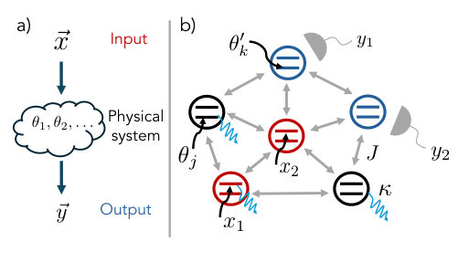
<figcaption class="paper-figure-caption"><b>Fig 1.</b> FIG. 1. (a) A generic physical learning setup, where sys- tem parameters θj are trained so that the system reproduces a target input-output function from a set of parameters ⃗x to measured quantities ⃗y. (b) Implementation in a driven- dissipative system of interacting qubits. Internal parameters θj and inputs xk are drive amplitudes; the qubits interact with strength J and are subject to decay at rate κ.</figcaption>
</figure>
<figure class="paper-figure-card">
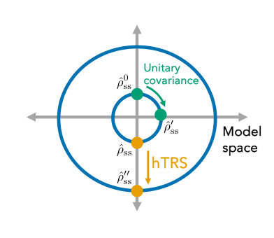
<figcaption class="paper-figure-caption"><b>Fig 2.</b> FIG. 2. Schematic of the space of drive parameters for a driven-dissipative quantum system. A circle of a fixed radius schematically represents the set of models whose steady states are related by a unitary transformation, i.e. ˆρ′ ss = ˆU ˆρ0 ss ˆU † for some unitary ˆU. When the system has hTRS, this gauge covariance is effectively ‘complexified’: we can write down an explicit relation between steady states that lie on circles of different radii, i.e. for drives anywhere in the parameter space of the model. This non-trivial extension of the unitary covariance is the main content of Theorems 1 and 2.</figcaption>
</figure>
<figure class="paper-figure-card">
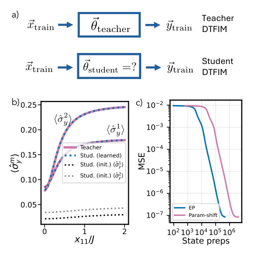
<figcaption class="paper-figure-caption"><b>Fig 3.</b> FIG. 3. (a) Schematic depicting teacher-student learning, where a ‘student’ system with drives ⃗θstudent is used to learn the input-output relation generated by an identical ‘teacher’ system (with some initially unknown drives ⃗θteacher). (b) Input-output relations for teacher-student learning with a N = 11 spin DTFIM model (c.f. Eq. (25)) with one in- put spin and three output spins (Mout = 3). The input is the spin 11 drive amplitude x11, and the outputs are ⃗y = (⟨ˆσ1 y⟩, ⟨ˆσ2 y⟩, ⟨ˆσ3 y⟩); only two are plotted. Solid pink curves correspond to the target input-output relation defined by the teacher. The drive amplitudes ⃗θstudent (for spins 1 to 10) are trained either by EP (Sec. II A 2)...</figcaption>
</figure>
<figure class="paper-figure-card">
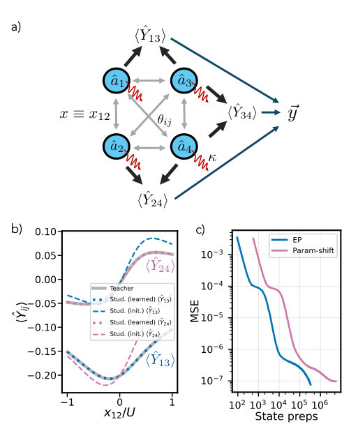
<figcaption class="paper-figure-caption"><b>Fig 4.</b> FIG. 4. (a) Schematic depicting the encoding of an input- output relation in a dissipative, pair-driven bosonic lattice (here with N = 4 modes). We show a setup with one input parameter and three output observables. The single input x ≡x12 and training parameters θij (gray arrows) are driving amplitudes (matrix elements of M). The three outputs are the observables ⃗y ≡(⟨ˆY13⟩, ⟨ˆY34⟩, ⟨ˆY24⟩). There are 10 tuneable couplings in the system, and all but the input are trainable pa- rameters, θij. (b) Input-output relations for teacher-student training in the four mode bosonic model depicted in (a). We plot two of the three outputs. Solid gray curves correspond to the target relation set by the...</figcaption>
</figure>
<figure class="paper-figure-card">
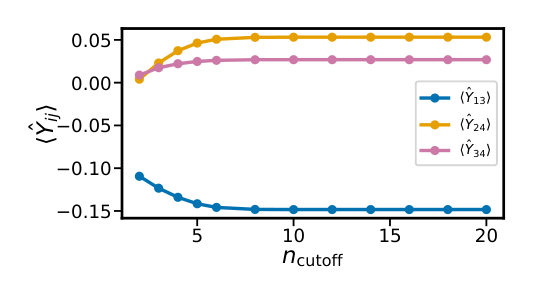
<figcaption class="paper-figure-caption"><b>Fig 5.</b> FIG. 5. Output observables for the N = 4 bosonic model with parameters corresponding to the teacher system (for x12/U = 0.5). For each photon cutoff, we use a bond dimension χ = Nnc + 1.</figcaption>
</figure>
</div>

<p><strong>Summary.</strong> This paper extends the Equilibrium Propagation (EP) training algorithm to non-equilibrium quantum systems, overcoming the computational bottleneck of repeated ground state calculations. By exploiting a hidden time-reversal symmetry in driven-dissipative systems, the authors establish new susceptibility relations that allow for efficient gradient calculation. This breakthrough enables the use of machine learning principles to characterize complex, open quantum dynamics.</p>
<p><strong>Why it may be interesting.</strong> This is highly relevant as it provides a powerful, scalable machine learning tool (EP) for characterizing and training models based on open, non-equilibrium quantum dynamics, which is a major frontier in AMO and quantum optics.</p>
<details>
<summary>Detailed structure</summary>
<p><strong>Main problem.</strong> The paper addresses the challenge of extending the Equilibrium Propagation (EP) training algorithm, used for self-learning physical systems, from equilibrium to non-equilibrium quantum settings.</p>
<p><strong>Main result.</strong> EP can be successfully extended to driven-dissipative quantum systems by leveraging a quantum detailed balance symmetry that holds in the non-equilibrium steady state, circumventing the need for repeated ground state calculations.</p>
<p><strong>Method.</strong> The authors derive new non-equilibrium static susceptibility relations based on a 'hidden time-reversal symmetry' (hTRS) to enable the efficient gradient calculation required for the training process.</p>
<p><strong>Model / system.</strong> The work analyzes driven-dissipative quantum systems, specifically examining a driven-dissipative transverse-field Ising model and a parametrically-driven bosonic lattice.</p>
<p><strong>Key observables.</strong> The primary diagnostic is the existence of specific susceptibility symmetries in the steady state, which allows for the extraction of gradients necessary for training.</p>
<p><strong>Important parameters / regimes.</strong> The analysis focuses on the trainability of the system, defined by the efficiency of gradient descent, rather than the expressivity of the learned function.</p>
<p><strong>Assumptions / limitations.</strong> The core assumption is that a quantum detailed balance symmetry, derived from hTRS, can be found in the non-equilibrium steady state, allowing the EP procedure to function.</p>
<p><strong>Figures summary.</strong> Figure 1 illustrates the general setup of a physical learning task in a driven-dissipative system. Figure 2 schematically shows how hTRS complexifies the gauge covariance, enabling relations between steady states.</p>
<p><strong>Paper structure.</strong> The paper first introduces the limitations of EP in equilibrium systems. It then proposes the extension to driven-dissipative systems, deriving the necessary non-equilibrium susceptibility relations. Finally, it analyzes this new training paradigm using two experimentally relevant models.</p>
</details>
<details>
<summary>Abstract</summary>
<p>Equilibrium propagation (EP) is a powerful training algorithm for self-learning physical systems that is widely used for a variety of machine learning inspired tasks. It relies on the existence of an energy function that depends on tunable training parameters, and can be extended to apply to many-body quantum systems in equilibrium. A key challenge however is the need to repeatedly relax to the system ground state after each parameter update. We show here a route for circumventing this problem by extending EP to many-body driven-dissipative quantum systems, where the dynamics naturally relaxes to a parameter-dependent non-equilibrium steady state. Despite the lack of a free energy, we find that for a class of open systems, a quantum detailed balance symmetry still allows for an efficient EP strategy. This relies crucially on a new class of non-equilibrium static susceptibility relations that we derive in detail. We analyze examples of our new non-equilibrium training paradigm for two experimentally-relevant models: a driven-dissipative transverse field Ising model, and a parametrically-driven bosonic lattice.</p>
</details>
<p><sub><a href="#top">↑ back to top</a></sub></p>

<p><a id="paper-2610.34262"></a></p>
<h3 id="observation-of-measurement-induced-localization-phenomena-in-a-solid-state-spin-system"><a href="http://arxiv.org/abs/2610.34262v1">Observation of measurement-induced localization phenomena in a solid-state spin system</a></h3>
<p><strong>Authors:</strong> Haolin Zhang, Shaoyi Xu, Zihang Zheng, Mengqi Wang, Mingzhe Liu, Zhiyuan Zhao, Ya Wang, Tianyu Xie, Fazhan Shi<br>
<strong>Type:</strong> experiment · <strong>Category:</strong> disordered systems and neural networks · <strong>PDF:</strong> <a href="https://arxiv.org/pdf/2610.34262v1">https://arxiv.org/pdf/2610.34262v1</a><br>
<strong>Analysis basis:</strong> full PDF text, analyzed in chunks
<strong>Topic relevance:</strong> 🔥 <code>quantum measurements</code> <strong>5/5</strong> · <code>QC/QI experiment</code> <strong>3/5</strong> · <code>driven-dissipative phase transition</code> <strong>3/5</strong> · <code>analog quantum simulation</code> <strong>2/5</strong> · <code>correlated / nonlocal dissipation</code> <strong>2/5</strong> · <code>non-equilibrium universality</code> <strong>2/5</strong> · <code>methods for driven-dissipative</code> <strong>1/5</strong> · <code>scars &amp; prethermalization</code> <strong>1/5</strong></p>
<div class="figure-strip-hint">↔ Scroll figures horizontally</div>
<div class="paper-figures-scroll">
<figure class="paper-figure-card">
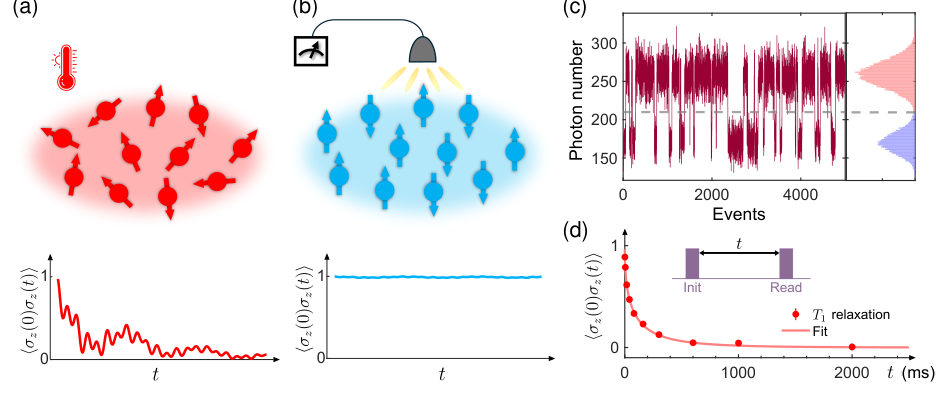
<figcaption class="paper-figure-caption"><b>Fig 1.</b> FIG. 1. Spin localization induced and monitored by external measurements. (a) Schematic of</figcaption>
</figure>
<figure class="paper-figure-card">
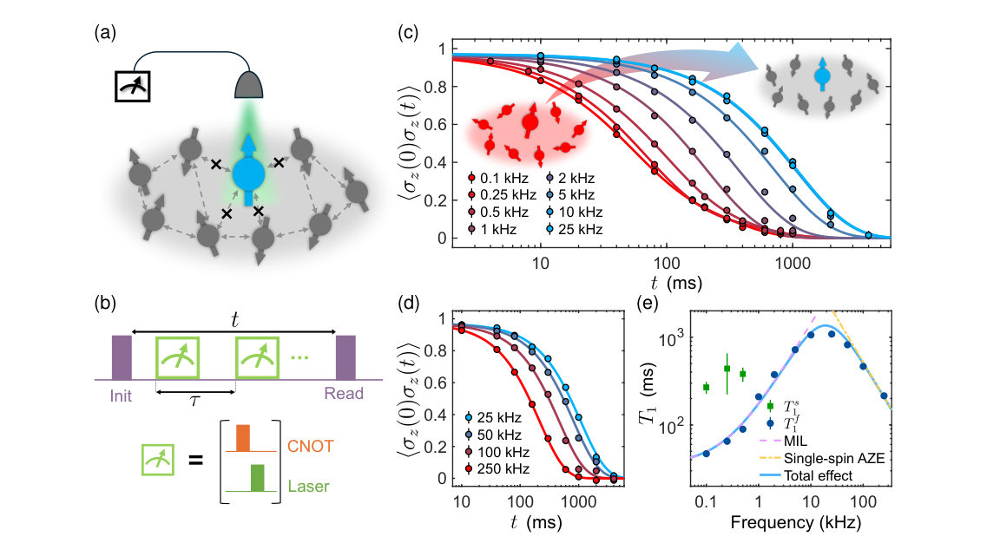
<figcaption class="paper-figure-caption"><b>Fig 2.</b> FIG. 2. Projective measurements on one 13C spin. (a) Schematic of the single-spin localiza-</figcaption>
</figure>
<figure class="paper-figure-card">
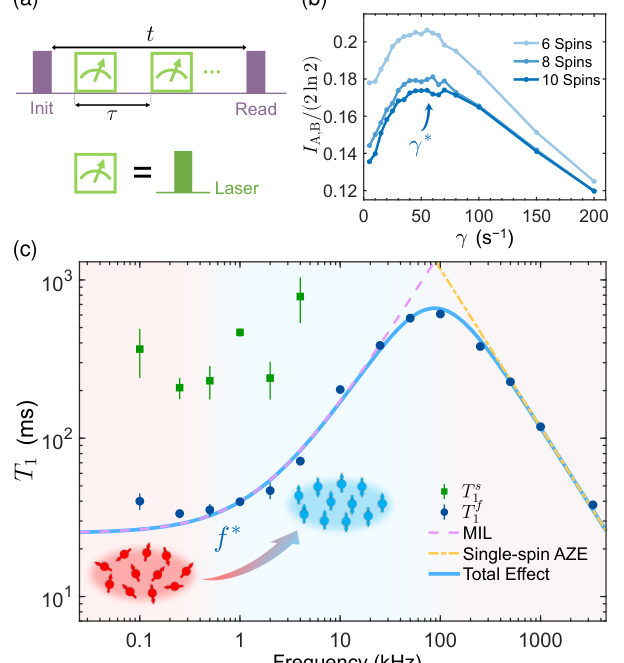
<figcaption class="paper-figure-caption"><b>Fig 3.</b> FIG. 3. Global weak measurements on the 13C spin network. (a) Sequence to perform global weak</figcaption>
</figure>
<figure class="paper-figure-card">
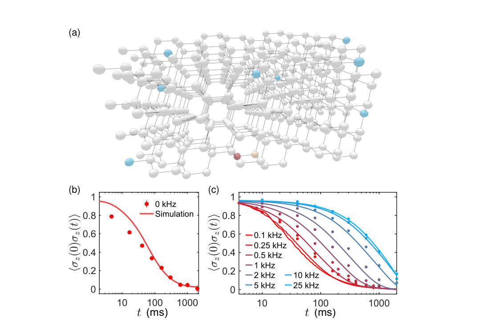
<figcaption class="paper-figure-caption"><b>Fig 4.</b> FIG. 4. Simulation of the 13C spin dynamics. (a) The configuration of eight 13C spins used</figcaption>
</figure>
</div>

<p><strong>Summary.</strong> This paper reports the experimental observation of measurement-induced localization (MIL) in a solid-state $^{13}	ext{C}$ nuclear spin system embedded in diamond. By applying controlled projective and weak measurements, the researchers demonstrated that the system's dynamics transition from a chaotic, volume-law regime to a localized, area-law regime. This work validates the theoretical understanding of measurement's role in controlling many-body quantum phases.</p>
<p><strong>Why it may be interesting.</strong> This work provides a direct experimental realization of a theoretical concept (MIL) in a solid-state platform, offering crucial insights into how measurement back-action can fundamentally alter many-body quantum dynamics, which is highly relevant to open quantum systems.</p>
<details>
<summary>Detailed structure</summary>
<p><strong>Main problem.</strong> The primary goal is to experimentally observe and demonstrate measurement-induced localization (MIL) in a solid-state spin system, contrasting with the difficulty of realizing such fully localized phases.</p>
<p><strong>Main result.</strong> The authors successfully observed MIL by showing that increasing the measurement frequency (via projective or weak measurements) substantially prolongs the spin autocorrelation time, driving the system into a localized regime.</p>
<p><strong>Method.</strong> The experiment uses an interacting solid-state $^{13}	ext{C}$ nuclear spin system in diamond, read out via an adjacent NV center, and measures the spin autocorrelation function under varying measurement strengths.</p>
<p><strong>Model / system.</strong> The system is an interacting $^{13}	ext{C}$ nuclear spin network governed by a dipolar Hamiltonian, evolving towards a volume-law chaotic phase. Measurements are implemented either projectively on a single spin or globally weakly on the entire system.</p>
<p><strong>Key observables.</strong> Spin autocorrelation function ($\langle\sigma_z(0)\sigma_z(t)
angle$), which shows prolonged decay times indicating localization.</p>
<p><strong>Important parameters / regimes.</strong> Measurement frequency (or strength $\gamma$), which controls the transition between chaotic and localized dynamics.</p>
<p><strong>Assumptions / limitations.</strong> The system is well-isolated, allowing the physical many-body Hamiltonian to govern dynamics between measurement interventions.</p>
<p><strong>Figures summary.</strong> Figures illustrate the transition from volume-law chaotic evolution to localized behavior under measurement, and show the baseline decay curves and the effect of measurement frequency on autocorrelation time.</p>
<p><strong>Paper structure.</strong> The paper establishes the theoretical context of MIL, details the physical setup using the diamond spin system, presents the measurement protocols (projective vs. weak), and finally reports the observation of prolonged autocorrelation times as evidence for measurement-induced localization.</p>
</details>
<details>
<summary>Abstract</summary>
<p>Quantum measurement can profoundly impact the dynamics of many-body systems, for instance, inducing phase transitions from volume-law chaotic phases to area-law localized phases. While chaotic phases emerge naturally in generic many-body systems, the experimental realization of a fully localized phase driven by measurement remains challenging, primarily owing to the stringent requirement of near-perfect isolation of the system from environmental dissipation. Here we experimentally observe measurement-induced localization phenomena in an interacting $^{13}\mathrm{C}$ nuclear spin system in diamond. In contrast to previous circuit-model-based experiments, our well-isolated system evolves under a physical many-body Hamiltonian with measurements intervening at intervals. By implementing either projective measurements on a single spin or global weak measurements on the entire system, we observe substantially prolonged spin autocorrelation times as the measurement frequency increases. Our results, combined with numerical simulations, provide evidence that quantum measurement can drive a many-body system into a localized regime, and lay the groundwork for future experimental investigations into measurement-induced many-body dynamics and related entanglement phenomena.</p>
</details>
<p><sub><a href="#top">↑ back to top</a></sub></p>

<p><a id="paper-2610.35445"></a></p>
<h3 id="multistability-and-critical-frustrated-superradiance-in-open-anisotropic-quantum-rabi-trimer"><a href="http://arxiv.org/abs/2610.35445v1">Multistability and Critical Frustrated Superradiance in Open Anisotropic Quantum Rabi Trimer</a></h3>
<p><strong>Authors:</strong> Ya-Ping Ni, Yi-Ge Wu, Jie-Qiao Liao, Jin-Feng Huang<br>
<strong>Type:</strong> theory · <strong>Category:</strong> other · <strong>PDF:</strong> <a href="https://arxiv.org/pdf/2610.35445v1">https://arxiv.org/pdf/2610.35445v1</a><br>
<strong>Analysis basis:</strong> full PDF text, analyzed in chunks
<strong>Topic relevance:</strong> 🔥 <code>Tavis-Cummings &amp; cavity-many-emitter</code> <strong>4/5</strong> · 🔥 <code>driven-dissipative phase transition</code> <strong>4/5</strong> · <code>analog quantum simulation</code> <strong>3/5</strong> · <code>correlated / nonlocal dissipation</code> <strong>3/5</strong> · <code>methods for driven-dissipative</code> <strong>3/5</strong> · <code>non-equilibrium universality</code> <strong>3/5</strong> · <code>Dicke superradiance</code> <strong>2/5</strong> · <code>Keldysh / 2PI / non-Gaussian methods</code> <strong>2/5</strong> · <code>superradiant laser</code> <strong>2/5</strong></p>
<div class="figure-strip-hint">↔ Scroll figures horizontally</div>
<div class="paper-figures-scroll">
<figure class="paper-figure-card">
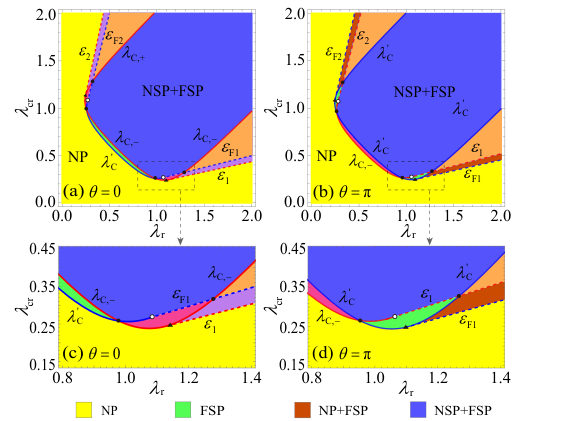
<figcaption class="paper-figure-caption"><b>Fig 1.</b> FIG. 1. (Color online) Phase diagram for (a,c) θ = 0 and (b,d) θ = π. Panels (c) and (d) are magnified views of the black dashed-boxed regions in (a) and (b), respectively, identifying six distinct phases, multiple quadruple points, and a triple point. The red dashed lines denote the critical anisotropy parameters ε1 and ε2, tangent to the red solid line. The blue dashed lines εF1 and εF2, which separate distinct superradiant phases, are tangent to the blue solid line. Here we set J/ωc = 0.05, κ/ωc = 0.5.</figcaption>
</figure>
<figure class="paper-figure-card">
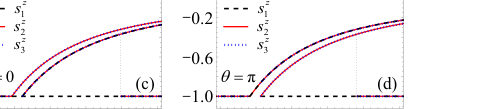
<figcaption class="paper-figure-caption"><b>Fig 2.</b> FIG. 3. (Color online) Optical coherence |αn| and spin ex- pectation values sz n as functions of the scaled coupling λ at θ = 0 and θ = π. Here we set J/ωc = 0.05, κ/ωc = 0.1, and ε = 4.</figcaption>
</figure>
<figure class="paper-figure-card">
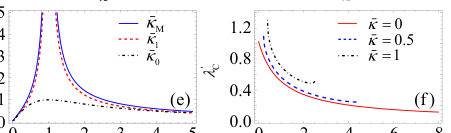
<figcaption class="paper-figure-caption"><b>Fig 3.</b> FIG. 2. (Color online) Phase diagrams in the (¯κ, λ) plane for (a,b) θ = 0 and (c,d) θ = π, with (a,c) ε = 1 and (b,d) ε = 4. Colored regions denote distinct quantum phases. Red dashed/dot-dashed curves denote λC,−/λC,+, while blue dashed curves denote λ′ C. The black dot marks the four-phase coexistence point at ¯κ = ¯κ0; blue (red) dotted lines locate at critical decay rates ¯κ = ¯κM (¯κ = ¯κ1). (e) Scaled critical decay rates ¯κj = κj/ωc (j = M, 1, 0) vs anisotropy ε at θ = π. (f) Critical coupling λ′ C vs ε for κ/ωc = 0, 0.5, and 1 at θ = π. We set J/ωc = 0.05.</figcaption>
</figure>
<figure class="paper-figure-card">
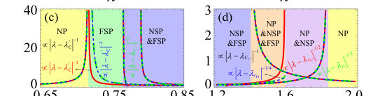
<figcaption class="paper-figure-caption"><b>Fig 4.</b> FIG. 4. (Color online) Average photon number ⟨a† nan⟩as a function of the scaled coupling λ at θ = 0 along (a) the red dashed line (ε = ε1) crossing the tricritical point, (b) the blue dashed line (ε = εF1) crossing two quadruple points, (c) and (d) the line λcr = 0.4 in Fig. 1(a), respectively. Here we set J/ωc = 0.05 and κ/ωc = 0.5.</figcaption>
</figure>
</div>

<p><strong>Summary.</strong> This paper analyzes the complex, non-equilibrium phase diagram of an open anisotropic quantum Rabi trimer. It reveals the existence of multiple stable phases, including a unique frustrated superradiant phase stabilized by dissipation. The findings offer new insights into controlling quantum dynamics in cavity QED systems using anisotropy and dissipation.</p>
<p><strong>Why it may be interesting.</strong> This work is highly relevant for AMO physicists as it explores complex, non-equilibrium quantum phase transitions in cavity QED systems, providing tools for quantum state engineering.</p>
<details>
<summary>Detailed structure</summary>
<p><strong>Main problem.</strong> The study investigates the nonequilibrium steady states and critical phenomena exhibited by an open anisotropic quantum Rabi trimer.</p>
<p><strong>Main result.</strong> The system exhibits abundant multistable phases, and the frustrated superradiant phase (FSP) can be stabilized by both positive and negative photon hopping, a unique feature of open systems.</p>
<p><strong>Method.</strong> The research combines semiclassical mean-field analysis with full quantum mechanical treatments to map out the system's phase diagram.</p>
<p><strong>Model / system.</strong> The model is an open anisotropic quantum Rabi trimer, consisting of three ring-coupled cavity-QED cells, governed by a Lindblad master equation accounting for cavity dissipation.</p>
<p><strong>Key observables.</strong> Order parameters include cavity-field coherence and atomic spin polarization; critical exponents ($eta_n$) characterize quantum phase transitions.</p>
<p><strong>Important parameters / regimes.</strong> Key parameters include the anisotropy parameter ($\epsilon$), cavity dissipation rate ($\kappa$), and the photon hopping phase ($   heta$).</p>
<p><strong>Assumptions / limitations.</strong> The analysis contrasts open system dynamics with closed models and incorporates quantum fluctuations beyond semiclassical approximations.</p>
<p><strong>Figures summary.</strong> Figures illustrate phase diagrams in the $(ar{\kappa}, \lambda)$ plane showing phase boundaries, and show the dependence of order parameters on anisotropy ($\epsilon$) and dissipation ($\kappa$).</p>
<p><strong>Paper structure.</strong> The paper systematically maps the nonequilibrium phase diagram, analyzes the stability of superradiant phases (NSP and FSP) against dissipation, and determines critical exponents by incorporating quantum fluctuations.</p>
</details>
<details>
<summary>Abstract</summary>
<p>We study the nonequilibrium steady states of an open anisotropic quantum Rabi trimer. Combining semiclassical and quantum mechanical treatments, we map out the system's phase diagram and elucidate the critical phenomena induced by anisotropic light-matter coupling, cavity dissipation, and complex photon hopping, which give rise to abundant multistable phases. Counterintuitively, the frustrated superradiant phase (FSP) can be stabilized by both positive and negative photon hopping, a feature absent in closed Rabi and Dicke trimers. We further uncover two independent dissipation thresholds for the normal superradiant phase and the FSP. Unlike isotropic open quantum Rabi trimers, both phases are suppressed once the dissipation exceeds their respective critical values. The rotating and counter-rotating interaction terms exhibit mutually reciprocal effects on the quantum phase transitions. By analyzing universal scaling behaviors with quantum fluctuations incorporated, we reveal an unprecedented finite-fluctuation critical exponent for the FSP. Moreover, the critical exponents of individual phases are coupling-strength dependent. The multistability and FSP can be tuned by anisotropy and dissipation. Our results broaden the scope of nonequilibrium quantum phase physics in few-body systems and hold promising applications for quantum state engineering and cavity/circuit quantum electrodynamics.</p>
</details>
<p><sub><a href="#top">↑ back to top</a></sub></p>

<p><a id="paper-2610.33290"></a></p>
<h3 id="variational-quantum-optimization-of-noisy-polarization-qubit-experiments"><a href="http://arxiv.org/abs/2610.33290v1">Variational Quantum Optimization of Noisy Polarization Qubit Experiments</a></h3>
<p><strong>Authors:</strong> Timur Javid, Brian Doolittle, Colin P. Lualdi, Brittany Conner, Michael Vayninger, Eric Chitambar, Paul G. Kwiat<br>
<strong>Type:</strong> both · <strong>Category:</strong> quantum information and computing · <strong>PDF:</strong> <a href="https://arxiv.org/pdf/2610.33290v1">https://arxiv.org/pdf/2610.33290v1</a><br>
<strong>Analysis basis:</strong> full PDF text, analyzed in chunks
<strong>Topic relevance:</strong> 🔥 <code>quantum optics experiment</code> <strong>4/5</strong> · <code>QC/QI experiment</code> <strong>3/5</strong> · <code>interference shaping light</code> <strong>2/5</strong> · <code>methods for driven-dissipative</code> <strong>2/5</strong> · <code>quantum measurements</code> <strong>2/5</strong> · <code>analog quantum simulation</code> <strong>1/5</strong> · <code>correlated / nonlocal dissipation</code> <strong>1/5</strong> · <code>driven-dissipative phase transition</code> <strong>1/5</strong></p>
<div class="figure-strip-hint">↔ Scroll figures horizontally</div>
<div class="paper-figures-scroll">
<figure class="paper-figure-card">
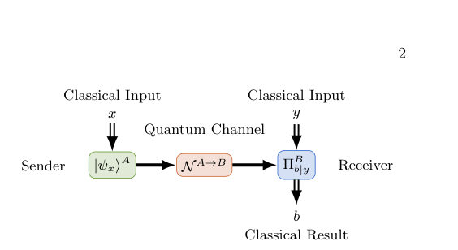
<figcaption class="paper-figure-caption"><b>Fig 1.</b> Figure 1. Prepare-and-Measure Scenario. A qubit is communicated from a sender device (Alice) to a receiver de- vice (Bob) through an optical fiber with an unknown trans- formation N A→B. The classical input x ∈X specifies the state preparation |ψx⟩and y ∈Y conditions the projective measurement ΠB b|y that returns a classical output b ∈B.</figcaption>
</figure>
<figure class="paper-figure-card">
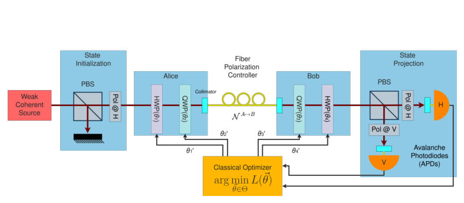
<figcaption class="paper-figure-caption"><b>Fig 2.</b> Figure 2. Optical Experimental Setup for Variational Quantum Optimization. A simple polarization-encoded qubit prepare-and-measure experiment, utilizing optical waveplates mounted on motorized rotation stages for state preparation and measurements, and controlled by a classical optimizer. See Section II B for a full description of the system.</figcaption>
</figure>
<figure class="paper-figure-card">
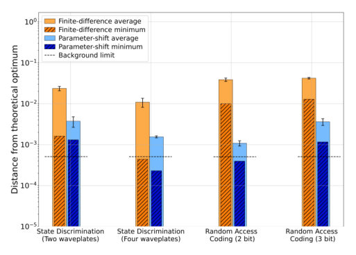
<figcaption class="paper-figure-caption"><b>Fig 3.</b> Figure 4. Optimization average and minimum costs. Note that the costs are scaled by the maximum cost per pro- tocol in this figure to allow direct comparison. For each dif- ferentiation method and protocol, we took 40 trials with 60 optimization steps each, with each trial starting the optimiza- tion with random parameters.</figcaption>
</figure>
<figure class="paper-figure-card">
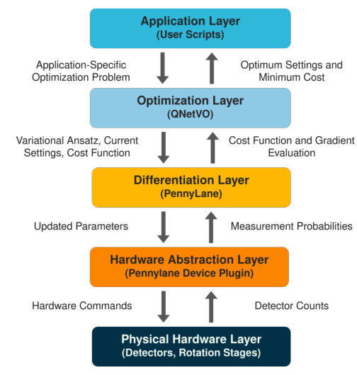
<figcaption class="paper-figure-caption"><b>Fig 4.</b> Figure 3. Variational Quantum Optimization Stack. The software used in this project can be organized into a se- ries of layers that abstract the physical system to a hardware- agnostic control interface. The physical layer consists of our experimental apparatus, including its hardware devices and quantum states. The hardware abstraction layer maps the hardware control parameters into differentiable unitary op- erators. In the differentiation layer, gradients are evaluated on our experimental apparatus for a specified cost function, variational ansatz, and hardware settings. In the optimization layer, variational ansatze and cost functions are constructed and optimization control logic is...</figcaption>
</figure>
<figure class="paper-figure-card">
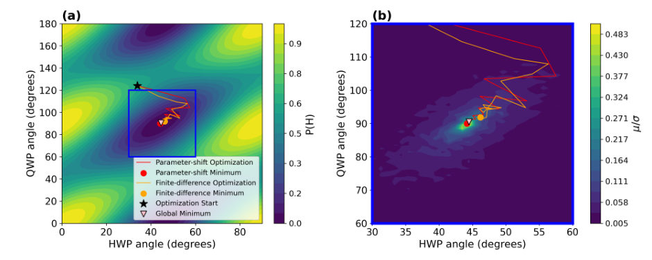
<figcaption class="paper-figure-caption"><b>Fig 5.</b> Figure 5. P(H) as a function of Alice’s waveplates. (a) A contour plot of measurement probability on the transmitted port of our measurement apparatus as a function of preparation waveplate angles with plotted optimization paths. The contour provides some intuition for the two-state discrimination problem with two waveplates: the optimizer will find both the minimum and the maximum in this landscape as these points are maximally different from each other. In the “four waveplate” case, this landscape becomes four-dimensional. (b) A section of the landscape in (a), showing the coefficient of variation σ/µ, where σ is the standard deviation and µ is the mean photon counts at each point. At...</figcaption>
</figure>
</div>

<p><strong>Summary.</strong> This work demonstrates the use of Variational Quantum Optimization (VQO) to compensate for noise and imperfections in quantum communication protocols using polarization qubits. By optimizing preparation and measurement settings on an optical testbed, the authors show that VQO can effectively maintain high fidelity for tasks like state discrimination and Random Access Codes. This offers a robust, hardware-efficient method for realizing quantum networking in noisy environments.</p>
<p><strong>Why it may be interesting.</strong> It provides a practical, data-driven framework (VQO) for mitigating realistic noise sources in photonic quantum communication, which is highly relevant for experimental quantum optics and quantum networking research.</p>
<details>
<summary>Detailed structure</summary>
<p><strong>Main problem.</strong> The paper addresses the challenge of maintaining quantum information integrity in noisy quantum network nodes, particularly in optical fiber links.</p>
<p><strong>Main result.</strong> Variational Quantum Optimization (VQO) successfully optimizes prepare-and-measure protocols, achieving polarization compensation comparable to conventional methods while analyzing the impact of hardware noise.</p>
<p><strong>Method.</strong> The authors employ VQO, a hybrid quantum-classical optimization technique, to maximize success probabilities for state discrimination and Random Access Codes (RACs) by tuning hardware parameters.</p>
<p><strong>Model / system.</strong> The system uses polarization-encoded qubits transmitted through an optical testbed simulating a quantum channel (CPTP map) susceptible to noise like birefringence. The protocol involves an encoder (Alice) and a decoder (Bob) using waveplates.</p>
<p><strong>Key observables.</strong> Success probability for state discrimination ($P_{SD}^{	ext{Success}}$) and Random Access Codes ($P_{RAC}^{	ext{Success}}$), and the resulting average state fidelity.</p>
<p><strong>Important parameters / regimes.</strong> Waveplate rotation angles ($\vec{	heta}$), noise parameters ($\omega$), and the number of encoded bits ($n$).</p>
<p><strong>Assumptions / limitations.</strong> The VQO methodology is designed to be hardware-agnostic, optimizing over controllable elements rather than assuming perfect channel knowledge.</p>
<p><strong>Figures summary.</strong> Figures illustrate the prepare-and-measure scenario setup, detailing the optical components (waveplates, PBS) used for the VQO demonstration.</p>
<p><strong>Paper structure.</strong> The paper progresses from defining the general noisy channel problem to applying VQO for state discrimination and RACs, comparing gradient estimation methods, and finally analyzing hardware limitations and proposing global optimization extensions.</p>
</details>
<details>
<summary>Abstract</summary>
<p>Quantum networking enables advanced communication protocols, distributed quantum computing, and enhanced sensing. These applications are often hindered by current realizations of quantum network nodes, which utilize noisy and imperfect hardware. Here, we apply variational optimization to counteract the effects of such imperfections. We parameterize network protocols for use with variational methods and then use these methods to optimize simple prepare-and-measure protocols on an optical testbed as a proof-of-principle demonstration. We demonstrate automated polarization compensation, achieving results comparable to conventional methods. We also analyze the effects of hardware imperfections and dark counts on the performance of our optimizations. We compare the performance of various gradient estimation methods and propose natural extensions, including further improvements through the use of global optimization and hybrid gradient estimation methods, as well as the application of variational optimization to nodes deployed on fiber networks.</p>
</details>
<p><sub><a href="#top">↑ back to top</a></sub></p>

<p><a id="paper-2610.33156"></a></p>
<h3 id="direct-tests-of-conformal-symmetry-with-rydberg-atoms-assessment-and-proposals"><a href="http://arxiv.org/abs/2610.33156v1">Direct tests of conformal symmetry with Rydberg atoms: assessment and proposals</a></h3>
<p><strong>Authors:</strong> Junchen Rong, Slava Rychkov<br>
<strong>Type:</strong> both · <strong>Category:</strong> other · <strong>PDF:</strong> <a href="https://arxiv.org/pdf/2610.33156v1">https://arxiv.org/pdf/2610.33156v1</a><br>
<strong>Analysis basis:</strong> full PDF text, analyzed in chunks
<strong>Topic relevance:</strong> 🔥 <code>Rydberg arrays</code> <strong>4/5</strong> · <code>analog quantum simulation</code> <strong>3/5</strong> · <code>QC/QI experiment</code> <strong>1/5</strong> · <code>quantum measurements</code> <strong>1/5</strong></p>
<div class="figure-strip-hint">↔ Scroll figures horizontally</div>
<div class="paper-figures-scroll">
<figure class="paper-figure-card">

<figcaption class="paper-figure-caption"><b>Fig 1.</b> Figure 1. Direct tests in infinite space: 2pt functions (left) test but scale symmetry, while 3pt functions (right) do test conformality but are hard to measure.</figcaption>
</figure>
<figure class="paper-figure-card">
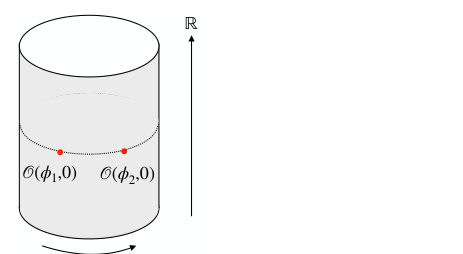
<figcaption class="paper-figure-caption"><b>Fig 2.</b> Figure 2. A direct test of conformality in finite volume, using the equal time CFT 2pt function on the cylinder S1 × R.</figcaption>
</figure>
<figure class="paper-figure-card">
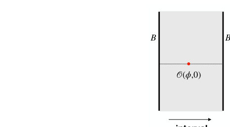
<figcaption class="paper-figure-caption"><b>Fig 3.</b> Figure 3. A direct test of conformality in finite volume, using the CFT 1pt function on the strip [0, π]×R.</figcaption>
</figure>
<figure class="paper-figure-card">
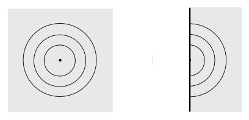
<figcaption class="paper-figure-caption"><b>Fig 4.</b> Figure 4. Justification of OSC. Cylinder, resp. strip, can be conformally mapped onto the plane (left), resp. half-plane (right), with constant time sections mapped to constant radius (semi)circles.</figcaption>
</figure>
<figure class="paper-figure-card">
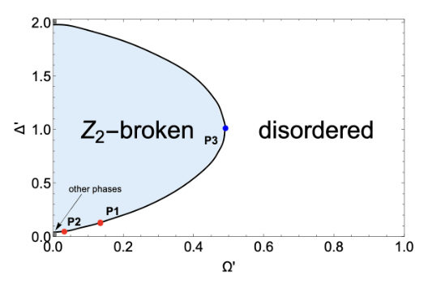
<figcaption class="paper-figure-caption"><b>Fig 5.</b> Figure 6. A part of the phase diagram of the model (3.1) showing the Ising phase transition between the Z2-broken “density wave” phase and the disordered phase. We do not show in detail the two tiny gray regions which house further phases [28, 51]. The two red points corresponds to the points studied in [29] (P1) and [30] (P2), see Table 1. Below we will focus on point P1 as well as the blue point P3 corresponding to ∆′ = ζ(6), Ω′ ≈0.488.</figcaption>
</figure>
</div>

<p><strong>Summary.</strong> This work outlines a method to directly test conformal symmetry by measuring two-point correlation functions in arrays of Rydberg atoms arranged on a circle. The authors optimize the experimental control pulses to maximize fidelity, concluding that this fundamental test of quantum field theory is achievable with current atomic quantum simulation technology.</p>
<p><strong>Why it may be interesting.</strong> It bridges fundamental theoretical concepts (CFT) with cutting-edge experimental capabilities (Rydberg atoms), providing a concrete, measurable goal for quantum simulation in AMO physics.</p>
<details>
<summary>Detailed structure</summary>
<p><strong>Main problem.</strong> The paper proposes a direct experimental test of conformal symmetry using physical quantum systems.</p>
<p><strong>Main result.</strong> It concludes that a direct experimental test of conformal symmetry is feasible using current Rydberg-atom technology.</p>
<p><strong>Method.</strong> The authors propose measuring equal-time two-point correlation functions on a circular arrangement of atoms and optimizing the adiabatic ramp profile for state preparation.</p>
<p><strong>Model / system.</strong> The physical platform is Rydberg-atom arrays arranged on a circle (1D setup with periodic boundary conditions). The theoretical framework is Conformal Field Theory (CFT).</p>
<p><strong>Key observables.</strong> Equal-time two-point correlation functions ($\langle O(\phi_1, 0)O(\phi_2, 0)
angle_{	ext{cyl}}$) and the fidelity ($F$) of the state preparation.</p>
<p><strong>Important parameters / regimes.</strong> Rabi frequency ($\Omega$), detuning ($\Delta$), and the finite volume size ($N$ or circumference).</p>
<p><strong>Assumptions / limitations.</strong> The analysis assumes adiabatic preparation of the critical state and accounts for decoherence effects in the measurements.</p>
<p><strong>Figures summary.</strong> Figures illustrate the geometry for testing conformality on a cylinder ($S^1 	imes \mathbb{R}$) and show the fidelity ($F$) of optimized ramp profiles.</p>
<p><strong>Paper structure.</strong> The paper establishes the theoretical basis for direct CFT testing using finite-volume correlators, details the experimental proposal using Rydberg atoms, and optimizes the necessary quantum control pulses (ramps) to achieve high fidelity.</p>
</details>
<details>
<summary>Abstract</summary>
<p>We propose a direct test of conformal symmetry using Rydberg-atom arrays. By arranging the atoms on a circle and measuring equal-time two-point correlation functions, the characteristic functional form predicted by conformal field theory can be tested directly. We estimate the number of experimental snapshots required to resolve this behavior with sufficient statistical precision. We further optimize the time-dependent ramp profile of the Rabi frequency~$Ω$ and detuning~$Δ$ used to prepare the target critical state adiabatically. The optimized profile achieves higher fidelity over much shorter evolution times than those employed in previous experiments. Taken together, these results suggest that a direct experimental test of conformal symmetry is feasible with current Rydberg-atom technology.</p>
</details>
<p><sub><a href="#top">↑ back to top</a></sub></p>

<p><a id="paper-2610.35332"></a></p>
<h3 id="measurement-dependent-reduction-of-open-dynamics-in-the-quantum-phase-estimation-algorithm-the-visible-subspace-and-the-damped-fejer-kernel"><a href="http://arxiv.org/abs/2610.35332v1">Measurement-dependent reduction of open dynamics in the quantum phase estimation algorithm: the visible subspace and the damped Fejér kernel</a></h3>
<p><strong>Authors:</strong> Marina O. Gordeichuk, Oleg M. Kiselev<br>
<strong>Type:</strong> theory · <strong>Category:</strong> quantum information and computing · <strong>PDF:</strong> <a href="https://arxiv.org/pdf/2610.35332v1">https://arxiv.org/pdf/2610.35332v1</a><br>
<strong>Analysis basis:</strong> full PDF text, analyzed in chunks
<strong>Topic relevance:</strong> 🔥 <code>quantum measurements</code> <strong>4/5</strong> · <code>Full counting statistics</code> <strong>1/5</strong> · <code>Keldysh / 2PI / non-Gaussian methods</code> <strong>1/5</strong> · <code>correlated / nonlocal dissipation</code> <strong>1/5</strong> · <code>driven-dissipative phase transition</code> <strong>1/5</strong> · <code>methods for driven-dissipative</code> <strong>1/5</strong></p>
<div class="figure-strip-hint">↔ Scroll figures horizontally</div>
<div class="paper-figures-scroll">
<figure class="paper-figure-card">
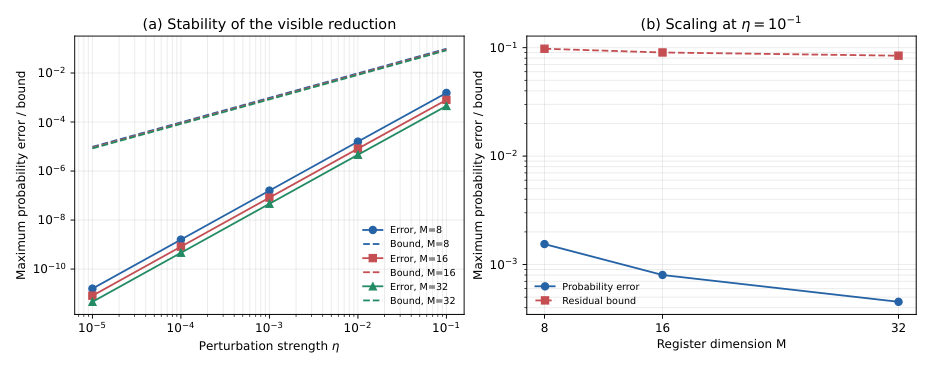
<figcaption class="paper-figure-caption"><b>Fig 1.</b> Figure 1: Stability of the visible reduction under a non-Toeplitz perturbation of the generator of strength η. (a) Maximal error of the outcome probabilities (solid lines) and the a posteriori bound (dashed lines) against η on logarithmic scales, for counting registers of M = 8 (circles), 16 (squares) and 32 (triangles) levels. The error decreases quadratically with η, whereas the bound is linear. (b) The same two quantities at η = 10−1 against the register size M: probability error (circles, solid line) and bound (squares, dashed line). The perturbation destroys the exact Toeplitz reduction, and the norm of the residual controls its accuracy.</figcaption>
</figure>
</div>

<p><strong>Summary.</strong> This work characterizes the minimal observable subspace necessary to predict the output distribution of the QPE algorithm under open dynamics. It uses advanced mathematical tools like Krylov theory and finite-time Gramians to derive dimension bounds and analyze the stability of the reduction. The findings are significant for understanding measurement limitations in quantum computation.</p>
<p><strong>Why it may be interesting.</strong> It provides a rigorous mathematical framework for quantifying how much information about the system's evolution is actually accessible through a specific measurement (the POVM), which is crucial for understanding measurement back-action in quantum computation.</p>
<details>
<summary>Detailed structure</summary>
<p><strong>Main problem.</strong> The paper determines the minimal set of observables required to predict the entire output distribution of the Quantum Phase Estimation (QPE) algorithm when the system undergoes open quantum dynamics.</p>
<p><strong>Main result.</strong> The dimension of this 'visible subspace' is bounded between $M$ and $M^2-M+1$, and the dynamics are characterized by a damped Fejér kernel in solvable models.</p>
<p><strong>Method.</strong> The analysis builds on Krylov theory of reduction, explicitly computing the structure of the visible subspace ($K_E$) using the full POVM and analyzing the resulting dynamics via the restricted generator $A_E$.</p>
<p><strong>Model / system.</strong> The system is the QPE algorithm applied to open quantum dynamics, modeled using a GKLS master equation approach with a counting register of size $M=2^n$. The dynamics are governed by an adjoint generator $G$.</p>
<p><strong>Key observables.</strong> Outcome probabilities $p_k(t)$, the visible subspace $K_{QPE}$, and the finite-time Gramian $G_T$.</p>
<p><strong>Important parameters / regimes.</strong> The register dimension $M$, the time $t$, and the perturbation strength $\eta$.</p>
<p><strong>Assumptions / limitations.</strong> The analysis relies on the full QPE POVM $\{E_k\}$ and uses finite-time Gramians and <em>a posteriori</em> residual estimates for approximate reduction.</p>
<p><strong>Figures summary.</strong> Figures compare the actual probability error ($\epsilon_p$) against the <em>a posteriori</em> bound for non-Toeplitz perturbations, showing the error scales quadratically ($\epsilon_p = O(\eta^2)$) while the bound scales linearly ($O(|\eta|)$).</p>
<p><strong>Paper structure.</strong> The paper progresses by defining the visible subspace using Krylov theory, deriving the exact determination of probabilities from the restricted generator $A_E$, and then applying this framework to the specific QPE setting, including stability analysis under perturbations.</p>
</details>
<details>
<summary>Abstract</summary>
<p>For the quantum phase estimation (QPE) algorithm we study the minimal space of observables that is sufficient to predict the entire output distribution under open dynamics of the counting register. Building on the general Krylov theory of reduction, we compute the structure of this space explicitly for the full Fourier measurement. The outcome probabilities are determined by cyclic sums of the state matrix. If the adjoint generator is diagonal on the matrix units, the spectral classes inside the residue classes of the index difference modulo the register dimension $M$ give a constructive basis, an exact dimension formula, and attainable bounds: the dimension of the visible space lies between $M$ and $M^2-M+1$. The class includes independent qubit dephasing, and an analytically solvable reference model of Gorini--Kossakowski--Lindblad--Sudarshan (GKLS) type yields a damped Fejér kernel; two random-unitary channels with the same Ramsey contrast show that higher harmonics are distinguishable in the QPE distribution. For approximate reduction we use a finite-time Gramian and an a posteriori residual estimate, with a quadratic error order for a reducing unperturbed subspace and a compatible initial state. Numerical calculations check the consistency of the representations and the behaviour of the error under non-Toeplitz perturbations.</p>
</details>
<p><sub><a href="#top">↑ back to top</a></sub></p>

<p><a id="paper-2610.33893"></a></p>
<h3 id="hidden-fisher-information-in-many-body-quantum-sensors"><a href="http://arxiv.org/abs/2610.33893v1">Hidden Fisher Information in Many-Body Quantum Sensors</a></h3>
<p><strong>Authors:</strong> Atta ur Rahman, Muhammad Noman, Samira Elghaayda, Saeed Haddadi<br>
<strong>Type:</strong> theory · <strong>Category:</strong> quantum information and computing · <strong>PDF:</strong> <a href="https://arxiv.org/pdf/2610.33893v1">https://arxiv.org/pdf/2610.33893v1</a><br>
<strong>Analysis basis:</strong> full PDF text, analyzed in chunks
<strong>Topic relevance:</strong> 🔥 <code>quantum measurements</code> <strong>4/5</strong> · <code>analog quantum simulation</code> <strong>3/5</strong></p>
<div class="figure-strip-hint">↔ Scroll figures horizontally</div>
<div class="paper-figures-scroll">
<figure class="paper-figure-card">
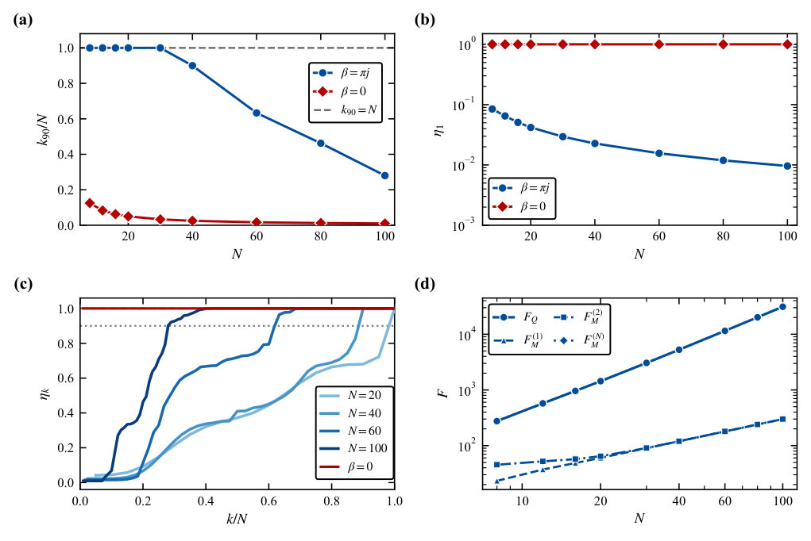
<figcaption class="paper-figure-caption"><b>Fig 1.</b> FIG. 1. Large-N moment-readout hierarchy for the kicked-top sensor. (a) Normalized readout depth k90/N. The linear protocol, β = 0, requires only the lowest moment degree, whereas the resonant nonlinear protocol, β = πj, retains a much larger readout depth over the simulated range. (b) First-moment accessibility η1 = F (1) M /FQ. For the nonlinear protocol, η1 falls to the percent level by N = 100, while the linear protocol remains near unity. (c) Cumulative accessibility ηk = F (k) M /FQ versus scaled moment degree k/N for N = 20, 40, 60, and 100 in the nonlinear protocol; the β = 0 curve at N = 100 is shown as a low-complexity reference. The dotted line marks ηk = 0.9. (d) Absolute...</figcaption>
</figure>
<figure class="paper-figure-card">
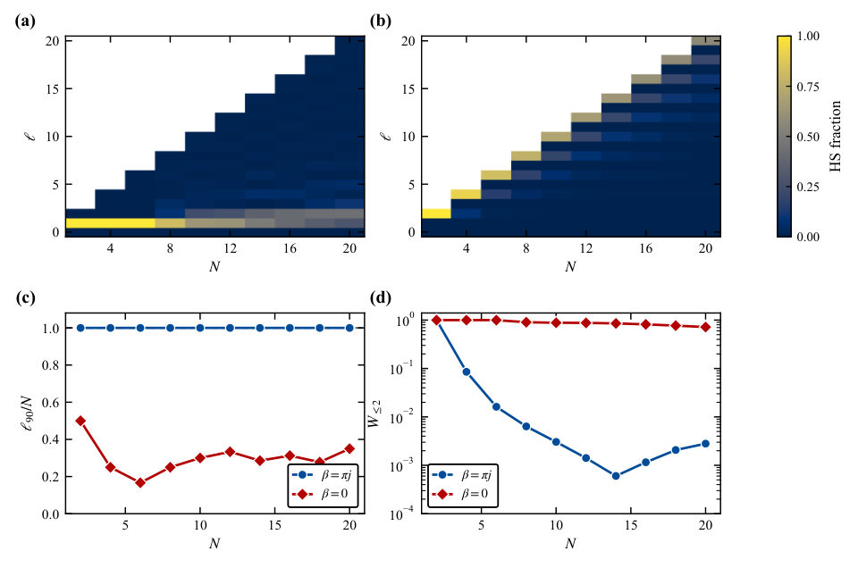
<figcaption class="paper-figure-caption"><b>Fig 2.</b> FIG. 2. The optimal SLD readout is transferred to high tensor rank. Rank-resolved SLD diagnostics for one weakly damped Floquet step with γ = 10−3 and N ≤20. (a) Hilbert–Schmidt rank fraction wℓ(Lα) for the linear protocol, β = 0. (b) The same quantity for the resonant nonlinear protocol, β = πj. The weight shifts toward the upper edge of the allowed tensor- rank range. (c) Normalized 90%-weight rank ℓ90/N. In the nonlinear protocol, capturing 90% of the SLD weight requires the maximal available rank throughout the displayed range, whereas the linear protocol remains concentrated at substantially lower rank. (d) Low-rank SLD weight W≤2. The nonlinear protocol suppresses the low-rank...</figcaption>
</figure>
<figure class="paper-figure-card">

<figcaption class="paper-figure-caption"><b>Fig 3.</b> FIG. 3. Detuning scan of the nonlinear readout barrier. The scaled nonlinear strength r = β/(πj) is scanned around the resonant strong-shear point. The scan shows that low-degree accessibility is suppressed throughout a broad nonlinear regime while the full-degree endpoint remains recovered.</figcaption>
</figure>
<figure class="paper-figure-card">
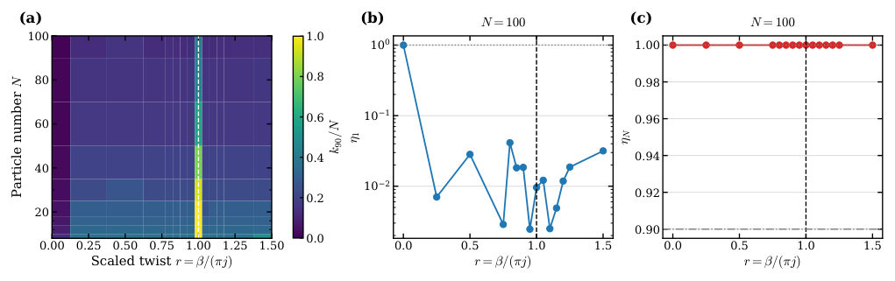
<figcaption class="paper-figure-caption"><b>Fig 4.</b> Figure 4 shows the normalized readout complexity k90/N as a function of detuning for several smaller system sizes. This representation complements the large-N heat-map scan in Fig. 3 by resolving individual finite-size curves near the resonant strong-shear point.</figcaption>
</figure>
<figure class="paper-figure-card">
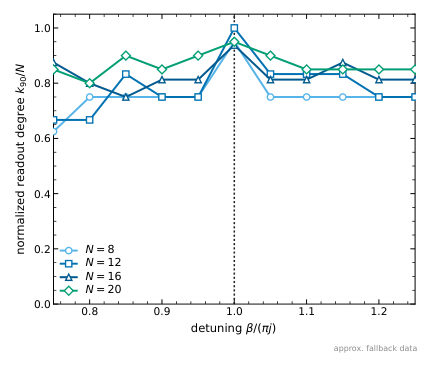
<figcaption class="paper-figure-caption"><b>Fig 5.</b> FIG. 4. Finite-size detuning curves. Normalized readout complexity k90/N as a function of detuning for the smaller system sizes used to resolve the strong-shear window. The vertical guide marks β/(πj) = 1.</figcaption>
</figure>
</div>

<p><strong>Summary.</strong> This theoretical paper introduces the moment Fisher hierarchy to quantify how much of the ultimate quantum sensing precision (QFI) is lost because the optimal measurement requires complex, high-rank observables. By analyzing a collective spin sensor, the authors demonstrate that nonlinear dynamics effectively 'hides' this information in high-rank tensor sectors, establishing a concrete, measurable readout-complexity bottleneck for quantum metrology.</p>
<p><strong>Why it may be interesting.</strong> This work provides a rigorous, quantitative framework for understanding measurement limitations in quantum metrology, showing that the physical mechanism (nonlinear shear) dictates a specific, high-order readout requirement, which is crucial for designing practical quantum sensors.</p>
<details>
<summary>Detailed structure</summary>
<p><strong>Main problem.</strong> The paper addresses the distinction between the ultimate sensitivity limit set by Quantum Fisher Information (QFI) and the practical limitation imposed by the complexity of the required quantum measurement readout.</p>
<p><strong>Main result.</strong> Nonlinear dynamics can preserve high QFI but transfer the optimal readout direction into high-rank tensor sectors, making it inaccessible to low-order collective spin measurements, thus creating a measurable readout-complexity bottleneck.</p>
<p><strong>Method.</strong> The authors introduce the moment Fisher hierarchy ($F_M^{(k)}$) and the readout-complexity scale ($k_{90}$) to quantify the fraction of QFI accessible via low-order collective moments.</p>
<p><strong>Model / system.</strong> The study analyzes a many-body quantum sensor modeled by $N$ spin-1/2 particles evolving under a kicked collective spin Hamiltonian, specifically examining the transition between linear and resonant nonlinear protocols.</p>
<p><strong>Key observables.</strong> Quantum Fisher Information (QFI), Moment Fisher Hierarchy ($F_M^{(k)}$), Readout-complexity scale ($k_{90}$), and the weight of the Symmetric Logarithmic Derivative (SLD) in different tensor ranks.</p>
<p><strong>Important parameters / regimes.</strong> System size ($N$), kick strength ($eta$), and the degree of the moment expansion ($k$).</p>
<p><strong>Assumptions / limitations.</strong> The analysis relies on the assumption that the moment hierarchy provides a diagnostic measure of measurement resource requirements, and that weak damping does not fundamentally alter the high-rank structure of the optimal readout.</p>
<p><strong>Figures summary.</strong> Figures illustrate the finite-size scaling of the required readout degree ($k_{90}/N$) and show the migration of the parameter tangent's weight towards high tensor ranks in the resonant nonlinear regime.</p>
<p><strong>Paper structure.</strong> The paper builds an argument by first defining the moment hierarchy to bridge QFI and measurement complexity. It then applies this to a kicked spin model, contrasting linear and nonlinear dynamics to demonstrate how the latter hides information in high-rank sectors, which is confirmed by analyzing the SLD structure and robustness against weak damping.</p>
</details>
<details>
<summary>Abstract</summary>
<p>Quantum Fisher information (QFI) determines the ultimate precision of a quantum sensor after optimization over all allowed measurements, but it does not quantify how difficult the optimal readout is to implement. We introduce a moment Fisher hierarchy $F_M^{(k)}$, which measures the fraction of QFI accessible to collective spin moments up to degree $k$, together with a readout-complexity scale $k_{90}$ defined by the minimum degree required to recover $90\%$ of the QFI. Applying this framework to a nonlinear collective-spin sensor, we show that many-body dynamics can preserve large QFI while transferring the optimal readout into high-rank $SU(2)$ tensor sectors inaccessible to low-order collective observables. For system sizes up to $N=100$, first moments access only $\sim 10^{-2}$ of the available QFI, while the degree required to recover $90\%$ of it grows to $k_{90}\simeq 28$. A rank-resolved analysis of the symmetric logarithmic derivative (SLD) under weak damping shows that the nonlinear protocol pushes the optimal readout toward the highest available tensor ranks while strongly depleting its low-rank weight. These results identify nonlinear tangent-space shear as the mechanism behind a finite-size readout-complexity bottleneck in many-body quantum metrology.</p>
</details>
<p><sub><a href="#top">↑ back to top</a></sub></p>

<p><a id="paper-2610.34485"></a></p>
<h3 id="real-time-correlation-of-relaxation-dephasing-and-two-level-system-dynamics-in-transmon-qubits"><a href="http://arxiv.org/abs/2610.34485v1">Real-Time Correlation of Relaxation, Dephasing, and Two-level System Dynamics in Transmon Qubits</a></h3>
<p><strong>Authors:</strong> Ambrose Yang, Alexander M. Young, Paal H. Prestegaard, Atharv Joshi, Matthew S. Ai, Q. Rumman Rahman, Faranak Bahrami, Matthew P. Bland, Jui-Lin Niu, Ourania-Maria Glezakou-Elbert, Ray D. Chang, Jocelyn Liu, Zhengyi Lu, Robert J. Cava, Nathalie P. de Leon, Andrew A. Houck<br>
<strong>Type:</strong> experiment · <strong>Category:</strong> quantum information and computing · <strong>PDF:</strong> <a href="https://arxiv.org/pdf/2610.34485v1">https://arxiv.org/pdf/2610.34485v1</a><br>
<strong>Analysis basis:</strong> full PDF text, analyzed in chunks
<strong>Topic relevance:</strong> 🔥 <code>QC/QI experiment</code> <strong>4/5</strong> · <code>correlated / nonlocal dissipation</code> <strong>1/5</strong> · <code>quantum measurements</code> <strong>1/5</strong> · <code>quantum optics experiment</code> <strong>1/5</strong></p>
<div class="figure-strip-hint">↔ Scroll figures horizontally</div>
<div class="paper-figures-scroll">
<figure class="paper-figure-card">
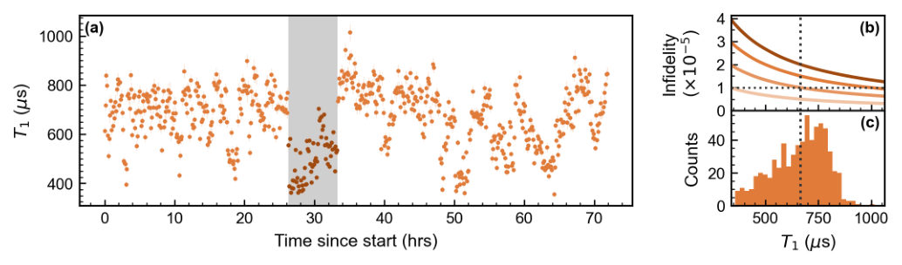
<figcaption class="paper-figure-caption"><b>Fig 1.</b> FIG. 1. Excursions in Qubit 𝑇1: (a) Temporal fluctuations in qubit 𝑇1 from dataset 3, measured repeatedly over 72 hours. Points in the gray shaded region show an excursion lasting 7 hours where the 𝑇1 is notably reduced from its steady-state value. (b) Theoretical single-qubit gate fidelities following [14] assuming 𝑇1 relaxation is the dominant source of gate errors for a 10 ns, 20 ns, 30 ns, and 40 ns 𝜋/2-pulse (light to dark orange). The horizontal dotted line denotes the 99.999% gate fidelity threshold, and the vertical dotted line indicates the 𝑇1 time required to reach this threshold assuming a 20 ns 𝜋/2-pulse. (c) Histogram of 𝑇1 values from (a). Threshold from (b) intersects at 𝑇1 =...</figcaption>
</figure>
<figure class="paper-figure-card">
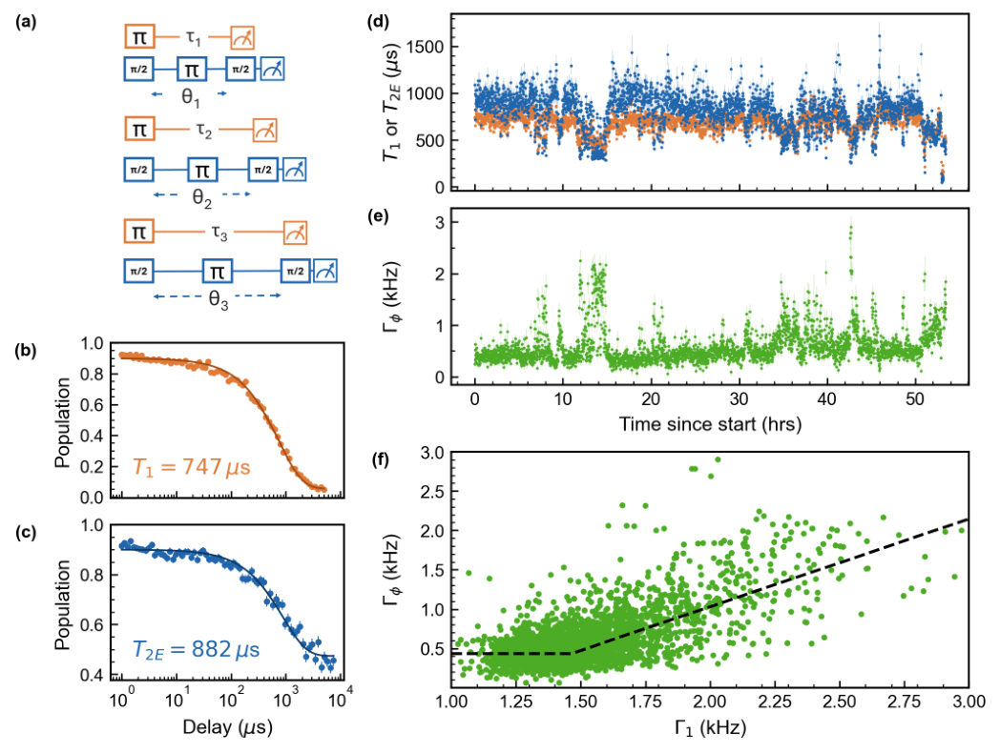
<figcaption class="paper-figure-caption"><b>Fig 2.</b> FIG. 2. Correlated relaxation and dephasing: (a) Shot-to-shot interleaving of a 𝑇1 (orange pulse sequence) and 𝑇2E (blue pulse sequence) measurement. Each round consists of a single shot measurement at each delay time (𝜏1, 𝜏2, . . . , 𝜏𝑛) and (𝜃1, 𝜃2, . . . , 𝜃𝑛) for𝑇1 and𝑇2E respectively. (b, c) Qubit populations extracted by averaging across 500 rounds. Population versus delay time is fitted to an exponential decay to extract 𝑇1 and 𝑇2E. (d) Repeated shot-to-shot interleaved measurement of 𝑇1 and 𝑇2E over 54 hours from dataset 1, which show 𝑇1 and 𝑇2E excursions that last for multiple minutes to hours. The y-axis range is upper-bounded by 1.7 ms to more clearly show trends in the data....</figcaption>
</figure>
<figure class="paper-figure-card">
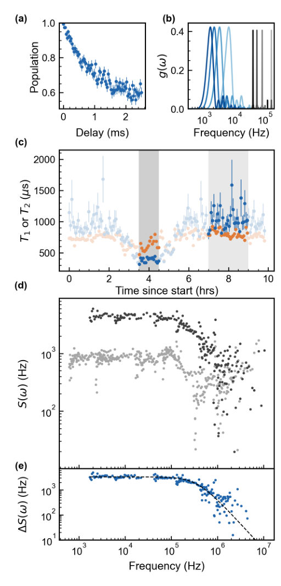
<figcaption class="paper-figure-caption"><b>Fig 3.</b> FIG. 3. Noise spectroscopy: (a) Sample decay trace showing the qubit population as a function of the total delay time 𝜏for 𝑁= 3 𝜋-pulses. Each point on the decay curve can be used to estimate the noise spectral density at a different frequency (Appendix E). (b) Filter function 𝑔𝑁(𝜔, 𝜏) for CPMG pulse sequence with 𝑁= 3 𝜋-pulses for 𝜏= 0.25, 0.5, 0.75 and 1 ms (lighter to darker blue). Filter function for 𝑁= 81 𝜋-pulses for the same 𝜏values (lighter to darker gray). (c) Repeated shot-to-shot interleaved measurement of 𝑇1 (orange) and 𝑇2 (blue) measured with an 𝑁= 3 CPMG sequence over 10 hours from dataset 2. The dark gray shaded data points from 𝑡= 3.5 to 4.5 hours are inside an excursion....</figcaption>
</figure>
<figure class="paper-figure-card">
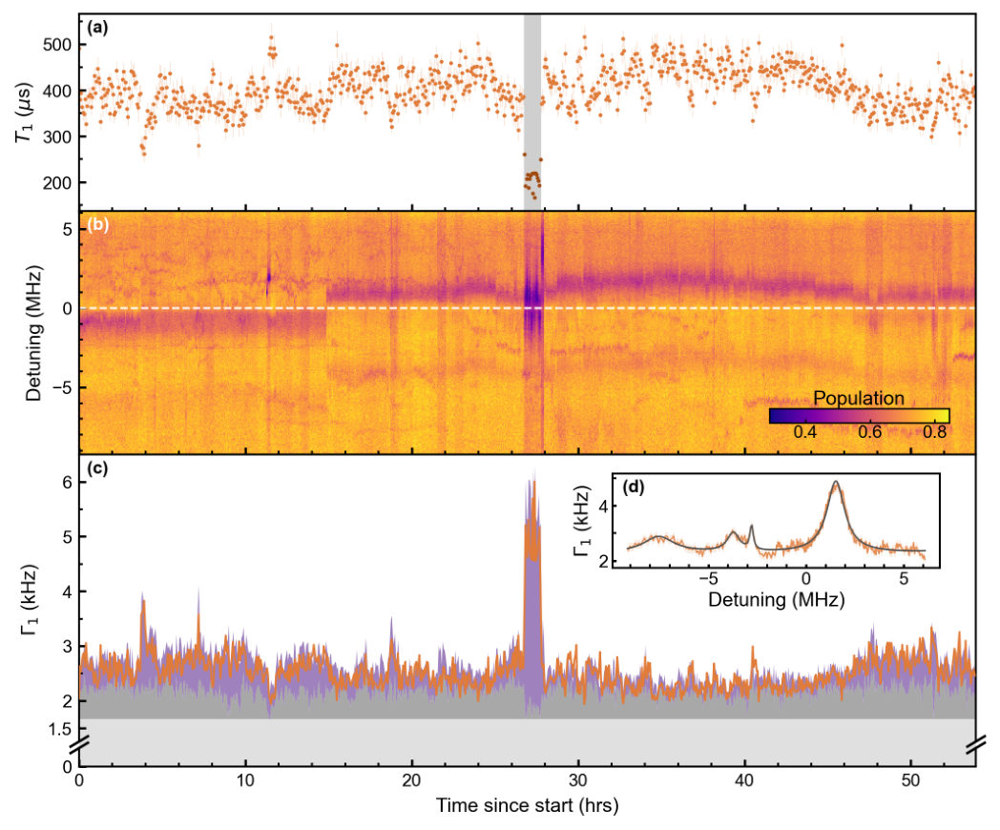
<figcaption class="paper-figure-caption"><b>Fig 4.</b> FIG. 4. TLS spectroscopy: (a) Measurement of 𝑇1 over 54 hours from interleaved 𝑇1 and AC Stark pulse sequences from dataset 7. A clear excursion (gray shaded region) is visible around hour 27. (b) Qubit excited state population at 𝜏= 100 𝜇s at various qubit frequencies over the same time window as (a). Purple bands represent frequencies with reduced population due to a resonant strongly coupled TLS. Excursion in (b) at hour 27 coincides with the spectral diffusion of a TLS into the qubit frequency (white dashed line). (c) Measured Γ1(𝑡) (orange) and fitted ˆΓ1( 𝑓= 0, 𝑡), which is the sum of three terms: TLS contribution Í 𝑖Γ(𝑖) 1, TLS( 𝑓= 0, 𝑡) (purple), time-dependent broadband...</figcaption>
</figure>
</div>

<p><strong>Summary.</strong> This research investigates performance degradation in superconducting transmon qubits caused by transient noise fluctuations. By combining interleaved measurements and TLS spectroscopy, the authors demonstrate that these performance dips are caused by individual, strongly-coupled defects (TLSs) resonating with the qubit frequency. This work establishes a powerful diagnostic tool for understanding and mitigating solid-state noise in quantum computing hardware.</p>
<p><strong>Why it may be interesting.</strong> This work provides a detailed experimental methodology for characterizing and diagnosing specific, transient noise sources (TLSs) that limit coherence in solid-state quantum hardware, which is crucial for building reliable quantum processors.</p>
<details>
<summary>Detailed structure</summary>
<p><strong>Main problem.</strong> The paper addresses the temporal fluctuations (excursions) in qubit relaxation ($T_1$) and coherence ($T_2$) times in superconducting qubits, which degrade gate fidelity.</p>
<p><strong>Main result.</strong> These performance excursions are strongly correlated with the spectral diffusion of individual, strongly-coupled Two-Level Systems (TLSs) that enter resonance with the qubit frequency.</p>
<p><strong>Method.</strong> The authors used interleaved lifetime/coherence measurements, noise spectroscopy (CPMG), and TLS spectroscopy to correlate noise sources with qubit decay rates.</p>
<p><strong>Model / system.</strong> The physical system is a Transmon qubit fabricated on a Ta-on-Si substrate. The noise is modeled by contributions from broadband losses and discrete, strongly-coupled TLS defects.</p>
<p><strong>Key observables.</strong> Relaxation rate ($\Gamma_1$), dephasing rate ($\Gamma_\phi$), and the noise spectral density $S(\omega)$.</p>
<p><strong>Important parameters / regimes.</strong> Excursion timescales (minutes to hours); TLS coupling strengths; correlation coefficients (e.g., $
ho=0.51$ for $\Gamma_1$ vs $\Gamma_\phi$).</p>
<p><strong>Assumptions / limitations.</strong> The analysis assumes that the observed noise is dominated by TLS defects, which are modeled using Lorentzian spectral densities.</p>
<p><strong>Figures summary.</strong> Figures show temporal traces of $T_1$ and gate fidelities exhibiting fluctuations, and scatter plots demonstrating the correlation between $\Gamma_1$ and $\Gamma_\phi$ during these excursions.</p>
<p><strong>Paper structure.</strong> The paper progresses from observing the problem (fluctuating $T_1/T_2$) to developing a measurement protocol (interleaved measurements) and finally attributing the fluctuations to specific noise sources (TLS spectral diffusion).</p>
</details>
<details>
<summary>Abstract</summary>
<p>Materials improvements in transmon qubits have yielded remarkable advances in qubit lifetimes (T1)and coherence times (T2). However, state-of-the-art superconducting qubits experience temporal fluctuations in their performance, which limit gate fidelities and quantum processor performance. We observe correlated increases in qubit relaxation and dephasing rates that last for minutes to hours, which we call T1 and T2 excursions. Using interleaved lifetime and coherence time measurements, noise spectroscopy, and two-level-system (TLS) spectroscopy, we find that these excursions are caused by single or few strongly-coupled TLS defects that spectrally diffuse into resonance with the qubit frequency. Our measurement protocol provides a powerful tool for understanding the noise sources that cause temporal fluctuations in superconducting qubit performance.</p>
</details>
<p><sub><a href="#top">↑ back to top</a></sub></p>

<p><a id="paper-2610.34927"></a></p>
<h3 id="dynamic-helimagnetism-via-charged-spin-current"><a href="http://arxiv.org/abs/2610.34927v1">Dynamic helimagnetism via charged spin current</a></h3>
<p><strong>Authors:</strong> Masaru Onoda<br>
<strong>Type:</strong> theory · <strong>Category:</strong> strongly correlated electrons · <strong>PDF:</strong> <a href="https://arxiv.org/pdf/2610.34927v1">https://arxiv.org/pdf/2610.34927v1</a><br>
<strong>Analysis basis:</strong> full PDF text, analyzed in chunks
<strong>Topic relevance:</strong> 🔥 <code>Keldysh / 2PI / non-Gaussian methods</code> <strong>4/5</strong> · <code>methods for driven-dissipative</code> <strong>2/5</strong></p>
<div class="figure-strip-hint">↔ Scroll figures horizontally</div>
<div class="paper-figures-scroll">
<figure class="paper-figure-card">
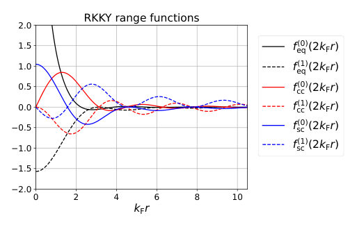
<figcaption class="paper-figure-caption"><b>Fig 1.</b> FIG. 1: RKKY range functions f(0) eq (2kFr), f (0) cc (2kFr), and f (0) sc (2kFr) (solid lines) and f (1) eq (2kFr), f (1) cc (2kFr), and f (1) sc (2kFr) (dashed lines), plotted as functions of kFr. All of them decay with increasing distance. The function f (0) eq (2kFr) of the RKKY interaction and the functions f (n) cc (2kFr) change sign repeatedly, whereas f (1) eq (2kFr) and f (n) sc (2kFr) keep a nearly fixed sign at large kFr.</figcaption>
</figure>
<figure class="paper-figure-card">
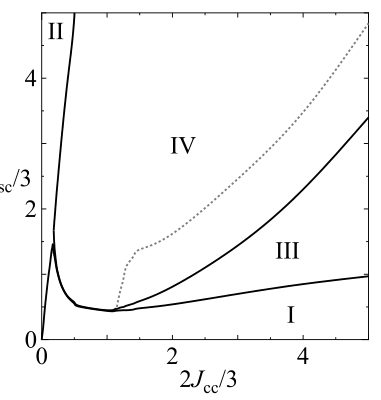
<figcaption class="paper-figure-caption"><b>Fig 2.</b> FIG. 2: Phase diagram of the dynamics of the two-spin system, adapted from Ref. [58] and plotted in the dimensionless currents 2Jcc/3 and 2Jsc/3 of the present work (equal to the normalized currents Jn and Js of Ref. [58]), for two spins separated by r = a0 with kFa0 = 1 and ˜γ2 = (3/2)2 × 0.05 = 0.1125. Regions I–IV correspond to a static collinear configuration, two types of periodic motion, and chaotic or complicated motion, respectively; the dotted line in region IV marks a relatively clear change in the type of motion (Sec. VI C). See Ref. [58] for details.</figcaption>
</figure>
<figure class="paper-figure-card">
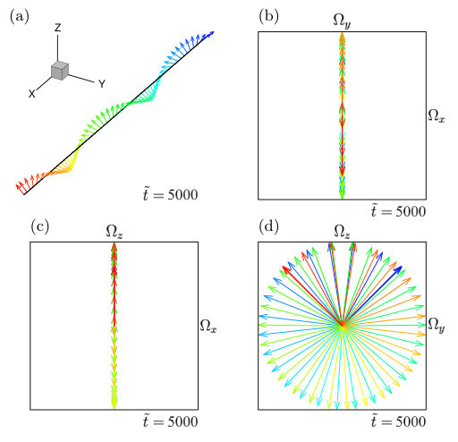
<figcaption class="paper-figure-caption"><b>Fig 3.</b> FIG. 3: Snapshots at ˜t = 5000 of a spin chain consisting of 60 spins equally spaced along the x direction, for ˜γ2 = 0.100, Jcc = 0.000, Jsc = 1.000, nc = ex, and ns = ex. (a) Bird’s-eye view of the entire spin chain. (b) Normalized x and y components of the spins. (c) Normalized x and z components of the spins. (d) Normalized y and z components of the spins.</figcaption>
</figure>
<figure class="paper-figure-card">
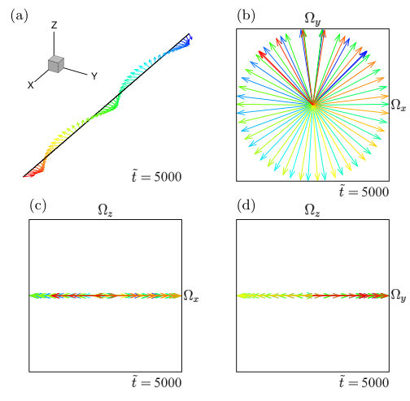
<figcaption class="paper-figure-caption"><b>Fig 4.</b> FIG. 4: Snapshots at ˜t = 5000 of a spin chain consisting of 60 spins equally spaced along the x direction, for ˜γ2 = 0.100, Jcc = 0.000, Jsc = 1.000, nc = ex, and ns = ez. (a) Bird’s-eye view of the entire spin chain. (b) Normalized x and y components of the spins. (c) Normalized x and z components of the spins. (d) Normalized y and z components of the spins.</figcaption>
</figure>
<figure class="paper-figure-card">
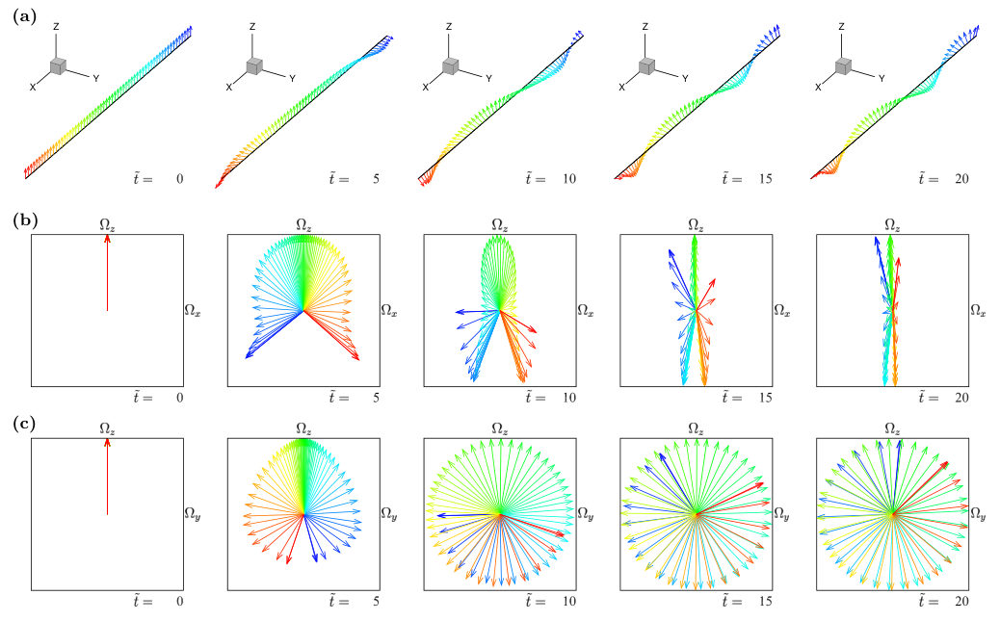
<figcaption class="paper-figure-caption"><b>Fig 5.</b> FIG. 5: Initial time evolution of a spin chain consisting of 60 spins equally spaced along the x direction, for ˜γ2 = 0.100, Jcc = 0.025, Jsc = 1.000, nc = ex, and ns = ex. Columns show snapshots at dimensionless times ˜t = 0, 5, 10, 15, 20 (left to right). (a) Bird’s-eye view of the entire spin chain. (b) Normalized x and z components of the spins. (c) Normalized y and z components of the spins.</figcaption>
</figure>
</div>

<p><strong>Summary.</strong> This theoretical work models how localized magnetic spins behave when coupled to conduction electrons carrying both charge and spin currents. It derives equations of motion showing that current flow can stabilize two types of helical magnetic order: a static type and a dynamic, precessing type. The findings demonstrate that these magnetic properties are continuously tunable by controlling the current amplitudes.</p>
<p><strong>Why it may be interesting.</strong> The explicit derivation of spin dynamics from current-coupled localized spins, using advanced quantum field techniques like CTPGF, provides a rich theoretical framework for understanding current-controlled magnetic textures relevant to open quantum systems.</p>
<details>
<summary>Detailed structure</summary>
<p><strong>Main problem.</strong> The study investigates dynamic helimagnetism stabilized and controlled by the interplay of both charge and pure spin currents in localized spins coupled to conduction electrons.</p>
<p><strong>Main result.</strong> The model predicts two distinct current-driven helical phases: a static helix from pure spin current, and a coherently precessing helix when a small charge-current component is added.</p>
<p><strong>Method.</strong> The authors derive effective equations of motion from the s-d exchange Hamiltonian using the Closed-Time-Path Green's Function formalism, followed by analytical and numerical solutions.</p>
<p><strong>Model / system.</strong> The system consists of classical, localized spins coupled to conduction electrons via an s-d exchange Hamiltonian, applied to a periodically arranged one-dimensional spin chain.</p>
<p><strong>Key observables.</strong> Precession angular frequency (ω), canting ratio (Δ), and helical wavenumber (q_helix).</p>
<p><strong>Important parameters / regimes.</strong> Current amplitudes (charge and spin), which continuously tune the helical pitch, frequency, and canting ratio.</p>
<p><strong>Assumptions / limitations.</strong> The model assumes point-like exchange coupling and neglects shape anisotropy and dipolar coupling of the magnets.</p>
<p><strong>Figures summary.</strong> Not specified by the notes, but the paper involves analytical determination and numerical testing of the derived equations of motion.</p>
<p><strong>Paper structure.</strong> The paper follows a structure detailing the model derivation (using CTPGF), approximations, deriving effective equations of motion (including spin torques and current-induced DM terms), and concluding with analytical and numerical testing of the predictions.</p>
</details>
<details>
<summary>Abstract</summary>
<p>We present a theoretical and numerical study of classical, localized spins coupled to conduction electrons that carry both charge and spin currents, deriving the effective equations of motion from the s-d exchange Hamiltonian. Applied to a periodically arranged one-dimensional spin chain, these equations yield two current-driven helical phases: a static helix stabilized by a pure spin current alone, and a coherently precessing helix that appears once a small charge-current component is added. For a given helical wavenumber, the precession angular frequency $ω$ and the canting ratio $Δ$ toward the hard axis follow analytically from the equations of motion, while the wavenumber $q_{\rm helix}$ of the precessing helix is selected by a heuristically constructed effective Lagrangian. Direct numerical integration of the same equations of motion reproduces all three observables wherever it yields a coherent helix. The helix chirality is set by a long-range, current-generated Dzyaloshinskii-Moriya (DM)-type coupling rather than an intrinsic DM interaction, so materials without bulk or interfacial DM interactions could also host current-controlled helical order. Because the helical pitch, precession frequency, and canting ratio are all continuously tunable by the current amplitudes, these helices could serve as probes of spin currents.</p>
</details>
<p><sub><a href="#top">↑ back to top</a></sub></p>

<p><a id="paper-2610.33773"></a></p>
<h3 id="induced-bell-chsh-observables-in-the-fewster-verch-measurement-scheme"><a href="http://arxiv.org/abs/2610.33773v1">Induced Bell-CHSH observables in the Fewster-Verch measurement scheme</a></h3>
<p><strong>Authors:</strong> M. S. Guimaraes, I. Roditi, S. P. Sorella<br>
<strong>Type:</strong> theory · <strong>Category:</strong> quantum information and computing · <strong>PDF:</strong> <a href="https://arxiv.org/pdf/2610.33773v1">https://arxiv.org/pdf/2610.33773v1</a><br>
<strong>Analysis basis:</strong> full PDF text, analyzed in chunks
<strong>Topic relevance:</strong> 🔥 <code>quantum measurements</code> <strong>4/5</strong> · <code>Keldysh / 2PI / non-Gaussian methods</code> <strong>1/5</strong> · <code>analog quantum simulation</code> <strong>1/5</strong></p>
<div class="figure-strip-hint">↔ Scroll figures horizontally</div>
<div class="paper-figures-scroll">
<figure class="paper-figure-card">
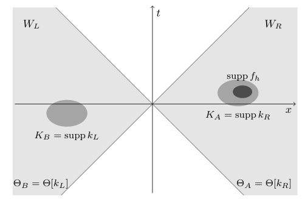
<figcaption class="paper-figure-caption"><b>Fig 1.</b> FIG. 1. Spacetime arrangement of the Alice–Bob configuration. The coupling profiles kR and kL have compact supports KA ⊂ WR and KB ⊂WL (shaded ellipses) inside the spacelike separated right and left wedges. By the exact factorization fh = k bλ,h the observable induced by a probe observable read out after Alice’s coupling admits a smearing representative supported entirely within KA (dark region). Since KA and KB are causally disjoint, the scattering automorphisms commute, Θ = ΘA◦ΘB = ΘB ◦ΘA, and each acts trivially on observables localized in the other wedge.</figcaption>
</figure>
</div>

<p><strong>Summary.</strong> This paper constructs explicit, operator-level observables for testing Bell-CHSH inequalities using the Fewster-Verch measurement scheme in quantum field theory. By coupling free Majorana fields to local probes, the authors demonstrate that the induced observables can saturate the Tsirelson bound. This work bridges the gap between abstract existence theorems and concrete, measurable quantum correlations.</p>
<p><strong>Why it may be interesting.</strong> It provides a concrete, operational realization of fundamental quantum information concepts (Bell tests) within the rigorous framework of quantum field theory measurements, which is highly relevant for understanding measurement limitations in complex systems.</p>
<details>
<summary>Detailed structure</summary>
<p><strong>Main problem.</strong> To provide an explicit, operator-level realization of Bell-CHSH observables, moving beyond structural existence theorems in quantum field theory.</p>
<p><strong>Main result.</strong> The authors constructed explicit dichotomic Bell observables for free Majorana fields, showing that the CHSH expectation can saturate the Tsirelson bound in a vacuum-prepared state.</p>
<p><strong>Method.</strong> The analysis uses the Fewster-Verch measurement framework, deriving induced observables from local couplings to quantum field probes.</p>
<p><strong>Model / system.</strong> The system involves free Majorana fields in 1+1 dimensions, coupled locally via an interaction term. The generalization extends this construction to coupled scalar fields.</p>
<p><strong>Key observables.</strong> Induced dichotomic Bell observables, the CHSH expectation value, and corrected Hermitian probe bilinears.</p>
<p><strong>Important parameters / regimes.</strong> The coupling profile $k(x)$, the dimension $1+1$, and the attainability hypotheses for saturation.</p>
<p><strong>Assumptions / limitations.</strong> The results rely on explicit attainability hypotheses for saturating the Tsirelson bound, and the construction is based on the Fewster-Verch measurement scheme.</p>
<p><strong>Paper structure.</strong> The paper first establishes the general framework using the Fewster-Verch scheme for Majorana fields, deriving factorization properties. It then develops the explicit construction for the observables and demonstrates the saturation of the Tsirelson bound. The methodology is later extended to bosonic systems.</p>
</details>
<details>
<summary>Abstract</summary>
<p>The Summers-Werner theorem shows that the vacuum of a relativistic quantum field theory violates the Bell-CHSH inequality maximally on complementary wedges, but it is an existence statement: it exhibits neither the observables nor an apparatus that measures them. We give an explicit operator-level realization within the Fewster-Verch measurement framework, obtaining dichotomic Bell observables of a free Majorana field in $1+1$ dimensions as observables induced by local couplings to Majorana probes. The induced system smearing factorizes exactly as $f_h=k\,b_{λ,h}$, so its support is controlled by the compactly supported coupling profile $k$; dichotomy is imposed by calibrating and normalizing the induced smearings rather than required of the probe observable; and a probe-only normal ordering yields the product of Alice's and Bob's induced bilinears, which the non-multiplicative induced map alone does not provide. Under explicit attainability hypotheses the induced observables saturate the Tsirelson bound in a state prepared from the vacuum. The construction extends to coupled scalar fields.</p>
</details>
<p><sub><a href="#top">↑ back to top</a></sub></p>

<p><a id="paper-2610.33821"></a></p>
<h3 id="banach-cesaro-positive-operator-valued-measure"><a href="http://arxiv.org/abs/2610.33821v1">Banach-Cesaro positive operator-valued measure</a></h3>
<p><strong>Authors:</strong> Sviatoslav V. Dzhenzher<br>
<strong>Type:</strong> theory · <strong>Category:</strong> other · <strong>PDF:</strong> <a href="https://arxiv.org/pdf/2610.33821v1">https://arxiv.org/pdf/2610.33821v1</a><br>
<strong>Analysis basis:</strong> full PDF text, analyzed in chunks
<strong>Topic relevance:</strong> 🔥 <code>quantum measurements</code> <strong>4/5</strong> · <code>analog quantum simulation</code> <strong>1/5</strong></p>
<div class="figure-strip-hint">↔ Scroll figures horizontally</div>
<div class="paper-figures-scroll">
<figure class="paper-figure-card">
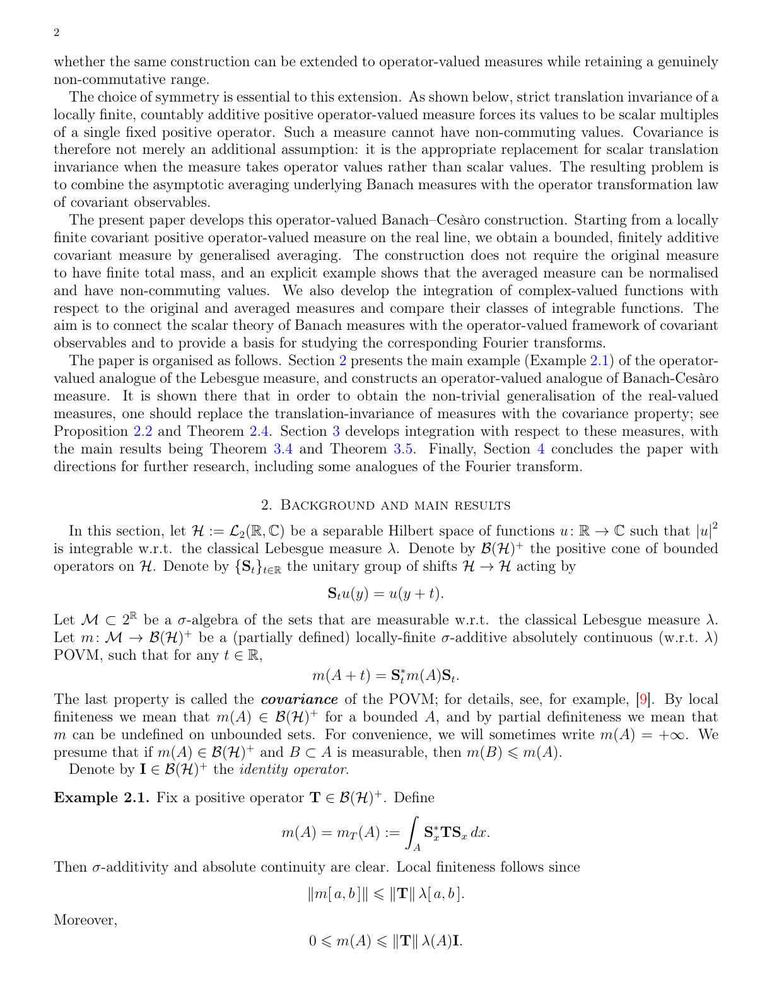
<figcaption class="paper-figure-caption"><b>Fig 1.</b> Low-resolution page preview, page 2</figcaption>
</figure>
<figure class="paper-figure-card">
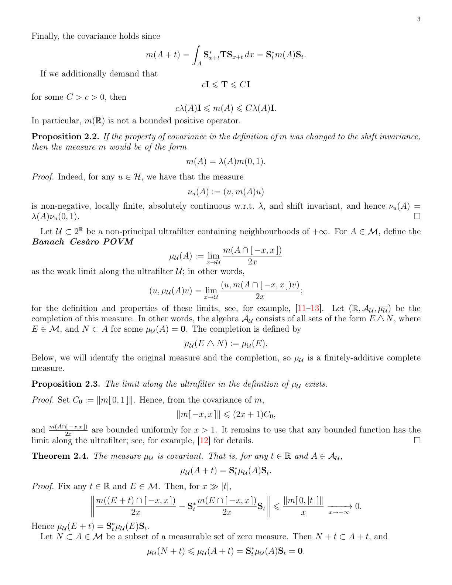
<figcaption class="paper-figure-caption"><b>Fig 2.</b> Low-resolution page preview, page 3</figcaption>
</figure>
<figure class="paper-figure-card">
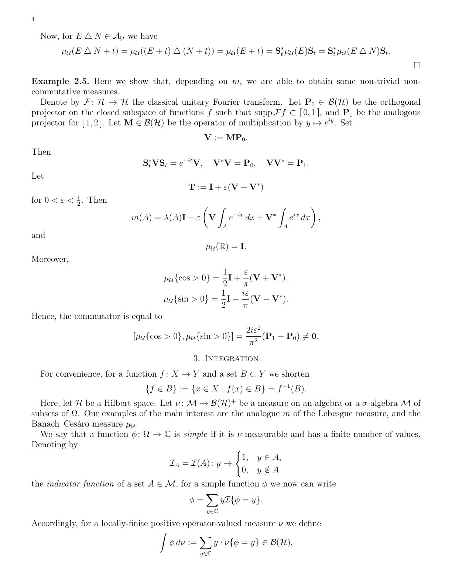
<figcaption class="paper-figure-caption"><b>Fig 3.</b> Low-resolution page preview, page 4</figcaption>
</figure>
<figure class="paper-figure-card">
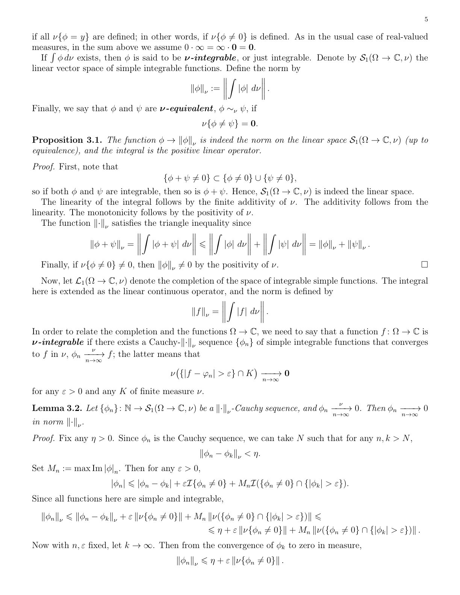
<figcaption class="paper-figure-caption"><b>Fig 4.</b> Low-resolution page preview, page 5</figcaption>
</figure>
<figure class="paper-figure-card">
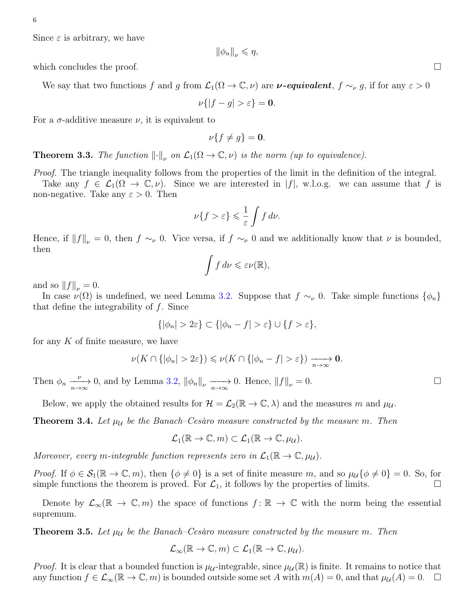
<figcaption class="paper-figure-caption"><b>Fig 5.</b> Low-resolution page preview, page 6</figcaption>
</figure>
</div>

<p><strong>Summary.</strong> This paper develops a mathematical theory for handling Banach-Cesàro positive operator-valued measures (POVMs) in a non-commutative setting. It extends classical measure theory to accommodate averaged quantum measurements, allowing for non-commuting observables while maintaining mathematical rigor. This is vital for analyzing open quantum systems where measurements are complex and non-ideal.</p>
<p><strong>Why it may be interesting.</strong> This work provides a powerful mathematical tool for handling non-commutative observables arising from physical measurements (POVMs) that are subject to averaging or non-ideal dynamics, which is crucial for modeling open quantum systems.</p>
<details>
<summary>Detailed structure</summary>
<p><strong>Main problem.</strong> The paper constructs and develops a rigorous integration theory for Banach-Cesàro positive operator-valued measures (POVMs) on the real line, extending scalar Banach measure theory to the non-commutative operator setting.</p>
<p><strong>Main result.</strong> It successfully defines the integral and associated $L^1$ space for these averaged POVMs, demonstrating that the resulting structure allows for non-commuting averaged operator values while maintaining total mass normalization.</p>
<p><strong>Method.</strong> The core method involves applying generalized Banach-Cesàro asymptotic averaging to locally finite covariant POVMs and then defining the integral via completion of simple functions using the continuous operator norm.</p>
<p><strong>Model / system.</strong> The mathematical framework is built around POVMs, which are used to model quantum measurements beyond ideal projections, particularly in the context of open quantum systems and random quantum channels.</p>
<p><strong>Key observables.</strong> The operator-valued Fourier transform and the commutator of averaged POVM values, $[\mu_U{\cos &gt; 0}, \mu_U{\sin &gt; 0}] 
eq 0$.</p>
<p><strong>Important parameters / regimes.</strong> The averaging process is governed by a non-principal ultrafilter $U$, and the analysis involves the continuous operator norm.</p>
<p><strong>Assumptions / limitations.</strong> The work extends the standard requirement of countable additivity for POVMs to a finitely additive structure motivated by averaging processes.</p>
<p><strong>Figures summary.</strong> Not specified.</p>
<p><strong>Paper structure.</strong> The paper first introduces the construction of the averaged measure $\mu_U$ using ultrafilters, then develops the integration theory by defining the norm on simple functions, and finally analyzes the properties of the resulting operator-valued Fourier transform.</p>
</details>
<details>
<summary>Abstract</summary>
<p>We construct a family of bounded, finitely additive, covariant positive operator-valued measures (POVMs) on the real line by applying generalised Banach-Cesaro asymptotic averaging to locally finite covariant POVMs. In contrast to the strictly shift-invariant case, where countably additive operator measures are restricted to scalar multiples of a single fixed operator, the introduced covariant setting allows for non-commuting averaged operator values while successfully normalising the total mass. We develop an integration theory for complex-valued functions by taking the completion of simple integrable functions with respect to the continuous operator norm induced by the positive integral of their absolute values. The integration spaces for the original and the averaged measures are shown to possess distinct null classes. Finally, we introduce the operator-valued Fourier transform on these integration spaces and analyze the core algebraic constraints imposed by the covariance property on the exponential multipliers.</p>
</details>
<p><sub><a href="#top">↑ back to top</a></sub></p>

<p><a id="paper-2610.35227"></a></p>
<h3 id="a-control-line-multiplexing-framework-for-scalable-quantum-computing"><a href="http://arxiv.org/abs/2610.35227v1">A Control Line Multiplexing Framework for Scalable Quantum Computing</a></h3>
<p><strong>Authors:</strong> Dayu Li, Naibin Zhou, Zhiyuan Chen, Zihua Chen, Yu Xu, Yuan Li, Daojin Fan, Wenhao Chu, Xiawei Chen, Hui Deng, Jiacheng Gui, Linyin Hong, Bo Fan, Weiping Lin, Haonan Zou, Haoxin Lou, Xintao Zhao, Sirui Cao, Ying Chong, Qingling Zhu, Chen Wang, Yisen Hu, Kaili Zhang, Feifan Su, Haibin Zhang, Jianghan Yin, Yajie Du, Yinan Jiang, Haoping Luo, Weifeng Yang, Jiafei Wang, Jin Lin, Futian Liang, Hao Rong, Kai Yan, Ming Gong, Jinjin Li, Maliang Liu, Cheng-Zhi Peng, Shaowei Li, Xiaobo Zhu, Jian-Wei Pan<br>
<strong>Type:</strong> both · <strong>Category:</strong> quantum information and computing · <strong>PDF:</strong> <a href="https://arxiv.org/pdf/2610.35227v1">https://arxiv.org/pdf/2610.35227v1</a><br>
<strong>Analysis basis:</strong> full PDF text, analyzed in chunks
<strong>Topic relevance:</strong> 🔥 <code>QC/QI experiment</code> <strong>4/5</strong></p>
<div class="figure-strip-hint">↔ Scroll figures horizontally</div>
<div class="paper-figures-scroll">
<figure class="paper-figure-card">
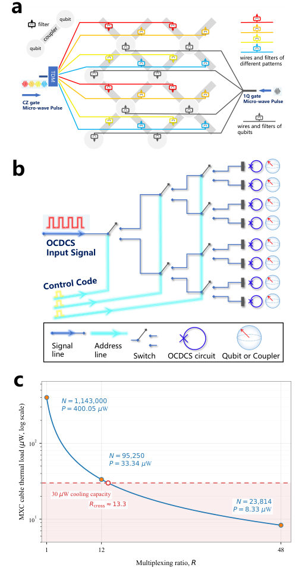
<figcaption class="paper-figure-caption"><b>Fig 1.</b> FIG. 1. (a) The schematic diagram of control-line mul- tiplexing qubit system. This diagram shows a 2d-periodic scalable structure. The colors of the wires and filters of the couplers mark the patterns of the couplers. The patterns are divided according to the surface code [53]. Only couplers in the same pattern need to perform parallel CZ gates. (b) The OCDCS system with switch array [2]. (c) Estimated passive MXC cable thermal load versus the control-line mul- tiplexing ratio R. Assuming 381,000 physical qubits, three dedicated control lines per qubit and the public NbTi FPC reference value of 350 pW/channel [54], the solid curve follows PMXC = 400.05/R µW. Markers show R = 1, 12 and 48;...</figcaption>
</figure>
<figure class="paper-figure-card">
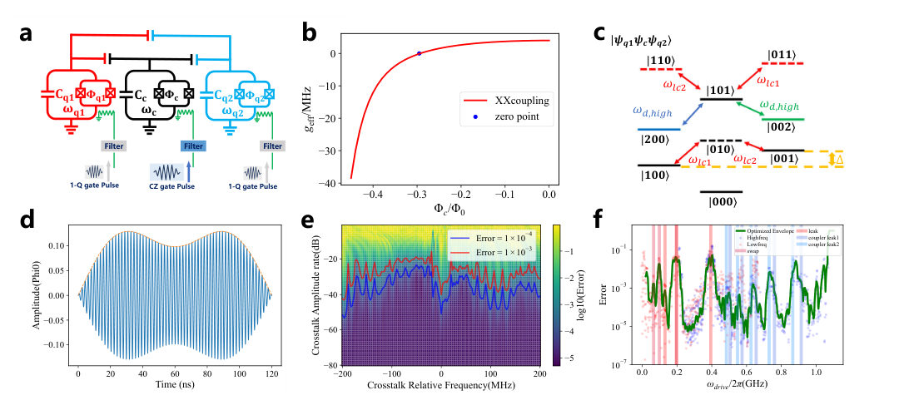
<figcaption class="paper-figure-caption"><b>Fig 2.</b> FIG. 2. (a) Equivalent circuit of the qubit-coupler-qubit structure in FDM diagram. Coupling strength is tuned via the flux bias Φc[55]. (b) Equivalent coupling strength vs. coupler flux bias. Blue circles indicate the coupling zero point. (c) MP- CZ gate schematic. ωd,high and ωd,low denote the driving frequencies of high- and low-frequency MP-CZ gates, respectively. (d) Driving waveform applied to the coupler flux bias. (e) With MP-CZ gate frequency as zero, x-axis: crosstalk waveform frequency; y-axis: crosstalk-to-MP-CZ amplitude ratio. The color represents the mixed signal error rate, including the original gate error (≈1 × 10−5) and the crosstalk-induced error. (f) Fidelity dependence...</figcaption>
</figure>
<figure class="paper-figure-card">
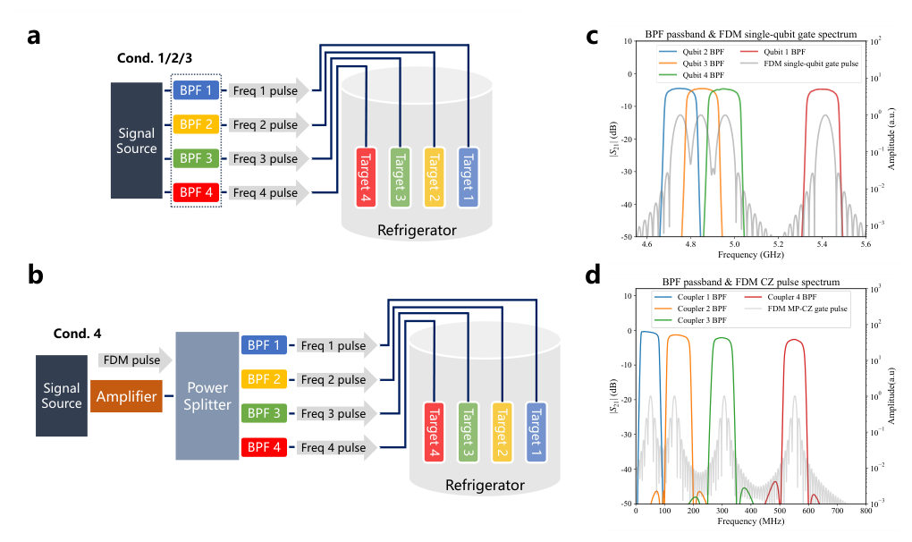
<figcaption class="paper-figure-caption"><b>Fig 3.</b> FIG. 3. (a) Experimental system for Cond. 1/2/3. Cond. 1 has no BPF in the dotted box area. (b) Experimental system for Cond. 4, the final configuration. Both MP-CZ and single-qubit gate experiments follow this configuration. For single-qubit experiments, the signal source is a 5.1 GHz microwave source and a 2 GSa/s AWG sideband; “target” denotes “qubit”. For MP- CZ experiments, the signal source is a 2 GSa/s AWG; “target” denotes “coupler”. (c) Filter passband and FDM pulse spectrum for FDM single-qubit gates. Right y-axis: FDM single-qubit pulse spectrum; left y-axis: four band-pass filter passbands. BPF denotes band-pass filter. (d) Filter passbands and FDM pulse spectrum for FDM CZ...</figcaption>
</figure>
<figure class="paper-figure-card">
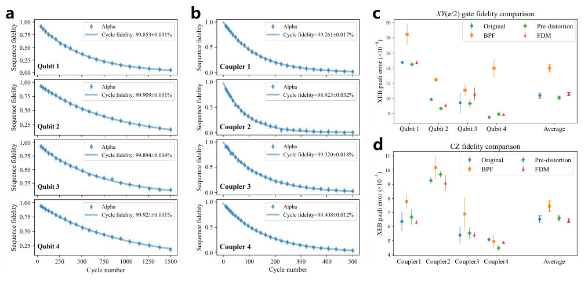
<figcaption class="paper-figure-caption"><b>Fig 4.</b> FIG. 4. (a) XEB results of FDM single-qubit gates. The per-cycle XEB fidelities of Qubits 1–4 are 99.853±0.001%, 99.909±0.001%, 99.894±0.004% and 99.921±0.001%. The average single-qubit gate fidelity is 99.894±0.002%. (b) XEB re- sults of the FDM MP-CZ gates. The per-cycle XEB fidelities of Couplers 1–4 are 99.26±0.02%, 98.92±0.03%, 99.32±0.02% and 99.41±0.01%. MP-CZ fidelities are corrected by the product of the two participating XY (π/2) fidelities in Supplemen- tary Table S1; the coupler–qubit mapping is given in Supplementary Section VII. The MP-CZ fidelities of Couplers 1–4 are 99.37±0.02%, 99.06±0.03%, 99.48±0.02% and 99.51±0.01%. The average CZ fidelity is 99.35±0.01%. (c) shows the...</figcaption>
</figure>
</div>

<p><strong>Summary.</strong> This paper introduces a Frequency-Division Multiplexing (FDM) framework to overcome the physical wiring limitations of scaling superconducting quantum computers. By encoding multiple gate operations onto shared, frequency-multiplexed microwave pulses, the required control-line count is drastically reduced. The work experimentally validates this approach, showing high-fidelity gate operations in a multiplexed environment.</p>
<p><strong>Why it may be interesting.</strong> This work directly addresses the engineering bottleneck of scaling superconducting quantum processors by proposing a fundamental architectural shift in control electronics, which is crucial for realizing large-scale quantum computation.</p>
<details>
<summary>Detailed structure</summary>
<p><strong>Main problem.</strong> Scaling fault-tolerant superconducting quantum computers faces severe limitations due to the wiring density and cooling-power budget when using dedicated control lines for millions of qubits.</p>
<p><strong>Main result.</strong> The proposed Frequency-Division Multiplexing (FDM) framework successfully demonstrates gate operations while maintaining low error rates, significantly reducing the required control-line count by orders of magnitude.</p>
<p><strong>Method.</strong> The authors propose a hybrid multiplexing framework where all gate operations are encoded onto polychromatic microwave pulses and spectrally routed using band-pass filters.</p>
<p><strong>Model / system.</strong> The system is based on superconducting transmon qubits coupled via tunable couplers, analyzed using a three-mode QCQ model. The control mechanism leverages frequency-division multiplexing to share a common control bus.</p>
<p><strong>Key observables.</strong> Average gate errors for parallel FDM CZ and XY gates, sequence fidelity (XEB, SPB, Leakage), and the thermal load on the mixing-chamber.</p>
<p><strong>Important parameters / regimes.</strong> Multiplexing ratios (e.g., 1:4 demonstration), required control-line reduction (up to 1/48), and the frequency separation ($\Delta$) between multiplexed channels.</p>
<p><strong>Assumptions / limitations.</strong> The scheme assumes the feasibility of an all-microwave architecture for two-qubit gates and relies on the effectiveness of band-pass filtering and waveform pre-distortion to mitigate crosstalk.</p>
<p><strong>Figures summary.</strong> Figures illustrate the scalable control architecture, the thermal load reduction vs. multiplexing ratio, and the spectral components of the microwave pulses used for gate control.</p>
<p><strong>Paper structure.</strong> The paper first identifies the scaling bottleneck, then proposes the FDM multiplexing framework, details the gate implementation (MP-CZ gates), provides simulation results showing error rates, and concludes by demonstrating the feasibility of the scalable control scheme.</p>
</details>
<details>
<summary>Abstract</summary>
<p>Universal fault-tolerant superconducting quantum computers are expected to require millions of physical qubits; yet extending the prevailing dedicated-control-line paradigm to this scale would exceed the wiring density and cooling-power budget of dilution refrigerators. Microwave frequency-division multiplexing (FDM) revolutionized classical communications by enabling many independent channels to share common transmission infrastructure. Translating this principle to superconducting quantum control, however, requires an all-microwave architecture and experimental validation of frequency-multiplexed gate control. Recent work in quantum error correction has demonstrated microwave-based readout, single-qubit gates and leakage suppression, whereas two-qubit gates remain predominantly driven by unipolar pulses and thus constitute the missing element of an all-microwave architecture. Here, we propose a periodically extensible hybrid multiplexing framework in which all gate operations are frequency-division multiplexed using polychromatic microwave pulses and band-pass filters, thereby reducing the required control-line count by one to two orders of magnitude. In a 1:4 demonstration, we achieve average errors of $(6.4\pm0.2)\times10^{-3}$ for parallel FDM CZ gates and $(10.6\pm0.2)\times10^{-4}$ for parallel FDM $XY(π/2)$ gates, without statistically significant multiplexing-induced degradation. Together with on-chip DC sources, this FDM-based gate-control scheme completes the last missing module in a scalable multiplexed-control architecture toward universal fault-tolerant quantum computing.</p>
</details>
<p><sub><a href="#top">↑ back to top</a></sub></p>

<p><a id="paper-2610.35608"></a></p>
<h3 id="did-the-gran-sasso-experiment-rule-out-the-diosi-penrose-theory-musing-on-the-2021-result-and-the-present-experimental-status"><a href="http://arxiv.org/abs/2610.35608v1">Did the Gran Sasso Experiment Rule Out the Diósi-Penrose Theory? Musing on the 2021 Result and the Present Experimental Status</a></h3>
<p><strong>Authors:</strong> Catalina Curceanu, Nicola Bortolotti, Lajos Diósi, Simone Manti, Kristian Piscicchia<br>
<strong>Type:</strong> both · <strong>Category:</strong> other · <strong>PDF:</strong> <a href="https://arxiv.org/pdf/2610.35608v1">https://arxiv.org/pdf/2610.35608v1</a><br>
<strong>Analysis basis:</strong> full PDF text, analyzed in chunks
<strong>Topic relevance:</strong> 🔥 <code>quantum measurements</code> <strong>4/5</strong></p>
<div class="figure-strip-hint">↔ Scroll figures horizontally</div>
<div class="paper-figures-scroll">
<figure class="paper-figure-card">
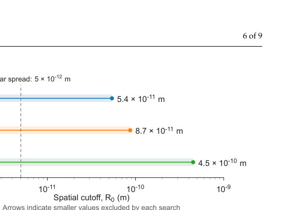
<figcaption class="paper-figure-caption"><b>Fig 1.</b> Figure 1. Lower bounds on the spatial cutoff R0 for the standard Markovian, white-noise DP dy- namics, expressed in the Diósi convention. Filled circles show Gran Sasso (2021; 95% posterior probability), Majorana (2022, corrected in 2023; 95% confidence level) and XENONnT (2026; 95% confidence level) [1,14–16].</figcaption>
</figure>
</div>

<p><strong>Summary.</strong> This paper reviews the experimental status of the Diósi-Penrose theory of spontaneous wave function collapse using results from low-background detectors. While the 2021 Gran Sasso result provided an initial exclusion, the authors clarify that modern, stronger bounds only constrain the specific Markovian dynamics used, leaving other collapse theories potentially untouched.</p>
<p><strong>Why it may be interesting.</strong> It is highly relevant as it discusses fundamental issues in quantum foundations—the measurement problem—by interpreting cutting-edge experimental constraints on spontaneous collapse models.</p>
<details>
<summary>Detailed structure</summary>
<p><strong>Main problem.</strong> The paper addresses whether the Gran Sasso experiment successfully ruled out the Diósi-Penrose (DP) theory of spontaneous wave-function collapse.</p>
<p><strong>Main result.</strong> The 2021 result excluded the parameter-free version of the theory under specific assumptions, but subsequent, stronger bounds from experiments like XENONnT only constrain the Markovian dynamics, not the entire theoretical framework.</p>
<p><strong>Method.</strong> The authors analyze experimental constraints by comparing measured low-background radiation counts against theoretical predictions derived from the DP model.</p>
<p><strong>Model / system.</strong> The model is the Diósi-Penrose theory, which posits spontaneous collapse governed by a stochastic dynamics dependent on a spatial cutoff parameter, $R_0$. Experiments utilize low-background detectors at facilities like Gran Sasso and XENONnT.</p>
<p><strong>Key observables.</strong> The primary observable is the absence of a statistically significant excess spontaneous radiation signal in the energy range of 1.0–3.8 MeV (Gran Sasso) or 1–140 keV (XENONnT).</p>
<p><strong>Important parameters / regimes.</strong> The key parameter is the spatial cutoff $R_0$, with current world-leading bounds exceeding $4.5 	imes 10^{-10}$ m.</p>
<p><strong>Assumptions / limitations.</strong> The exclusion is strictly limited to the Markovian, white-noise dynamics of the DP model and does not constrain colored-noise or other modified gravity collapse theories.</p>
<p><strong>Figures summary.</strong> Figure 1 compares the lower bounds on $R_0$ derived from Gran Sasso, Majorana, and XENONnT experiments, illustrating the tightening experimental constraints.</p>
<p><strong>Paper structure.</strong> The paper reconstructs the scope of the 2021 Gran Sasso result, updates this understanding with the latest XENONnT bounds, and clarifies the precise theoretical limitations of the exclusion.</p>
</details>
<details>
<summary>Abstract</summary>
<p>In 2021, a low-background experiment at the Gran Sasso National Laboratory searched for spontaneous radiation predicted by the standard Markovian Diósi-Penrose (DP) dynamics and obtained the new bound $R_0 > 5.4 \times 10^{-11}\,\mathrm{m}$ at $95\%$ probability for the short-length cutoff parameter. For germanium at the experimental temperature, the parameter-free prescription identifying $R_0$ with the spatial quantum spread of a nucleus gives $R_0 \simeq 5 \times 10^{-12}\,\mathrm{m}$. That particular combination, Diósi's stochastic dynamics and the Penrose-motivated mass-density resolution, was therefore excluded. Subsequent searches strengthened the cutoff bound. The Majorana Demonstrator improved it in 2022, and XENONnT has now obtained the world-leading limits $R_0 > 4.9 \times 10^{-10}\,\mathrm{m}$ at $90\%$ confidence level and $R_0 > 4.5 \times 10^{-10}\,\mathrm{m}$ at $95\%$ confidence level. These advances reinforce the 2021 exclusion but do not alter its logical scope: they \emph{parametrically constrain} the Markovian, effectively white-noise DP dynamics, not Penrose's (and Diósi's) lifetime criterion independently of a dynamics, and not all colored-noise, dissipative, or otherwise modified gravity-related spontaneous collapse theories. We reconstruct what Gran Sasso did and did not rule out and place that conclusion in the present experimental context.</p>
</details>
<p><sub><a href="#top">↑ back to top</a></sub></p>

<p><a id="paper-2610.34696"></a></p>
<h3 id="rank-one-factored-gradient-descent-without-restricted-isometry-application-to-quantum-pure-state-tomography-on-multi-qubits"><a href="http://arxiv.org/abs/2610.34696v1">Rank-one Factored Gradient Descent without Restricted Isometry: Application to Quantum Pure State Tomography on Multi-Qubits</a></h3>
<p><strong>Authors:</strong> Takahiro Kajisa<br>
<strong>Type:</strong> theory · <strong>Category:</strong> quantum information and computing · <strong>PDF:</strong> <a href="https://arxiv.org/pdf/2610.34696v1">https://arxiv.org/pdf/2610.34696v1</a><br>
<strong>Analysis basis:</strong> full PDF text, analyzed in chunks
<strong>Topic relevance:</strong> 🔥 <code>quantum measurements</code> <strong>4/5</strong></p>
<div class="figure-strip-hint">↔ Scroll figures horizontally</div>
<div class="paper-figures-scroll">
<figure class="paper-figure-card">
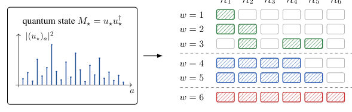
<figcaption class="paper-figure-caption"><b>Fig 1.</b> Figure 1: Partial-weight Pauli measurements. Each row is one observable σt; the shaded boxes mark the sites on which the string acts nontrivially, and the weight w(t) is the number of such sites. Measuring an observable of weight w requires reading out w sites jointly, so the acquisition rate decays exponentially as ηw, where η ∈(0, 1) is the per-site detection efficiency. Accumulating high-weight statistics therefore takes a long time, during which the apparatus drifts and the state itself changes—the samples cease to be i.i.d. and a systematic bias enters. The coherence that distinguishes the family ψφ of Counterexample 1.1 appears only in the w = n string, which falls outside the usable...</figcaption>
</figure>
<figure class="paper-figure-card">
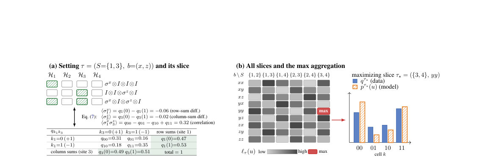
<figcaption class="paper-figure-caption"><b>Fig 2.</b> Figure 2: Structure of a slice. (a) The commuting family (slice) read out at once in the setting τ = ({1, 3}, (x, z)) and the data of that setting. Data accumulate as an empirical distribution qτ over cells (a cell k is the tuple of readout bits of the sites in the block); the interior of the contingency table is the weight- 2 record and the margins are its marginalization, i.e. the weight-1 data. Each string expectation is a signed sum of counts, expectations and counts being interconvertible by (7). (b) The settings form a (basis b) × (block S) grid, of size 9 × 6 = 54 for n = 4, N = 2; the max-sliced loss picks the slice τ⋆(red) at which the total variation ℓτ(u) (shading) between the...</figcaption>
</figure>
<figure class="paper-figure-card">
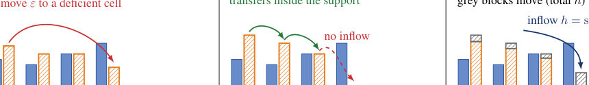
<figcaption class="paper-figure-caption"><b>Fig 3.</b> Figure 3: The support condition and the order of the mass flow. Blue is the data qτ and orange hatching the model pτ(u). Cells are split by the sign of the residual δk = pk −qk into surplus P, zero Z and deficient D, and what can be moved at first order is exactly a zero-sum flow on the support (pk &gt; 0) of the model. (a) When the support condition fails, a deficient cell carries mass, so the flow moving ε from a surplus cell to it is realizable and the loss decreases strictly: the point is not stationary. (b-1) Under the support condition the deficient cell is empty, no first-order inflow into it is possible, and only transfers inside the support remain, none of which decreases the loss in...</figcaption>
</figure>
</div>

<p><strong>Summary.</strong> This paper develops a robust optimization technique for Quantum State Tomography when measurements are imperfect and limited to low-weight Pauli observables. By replacing the standard $\ell_2$ loss with a max-sliced total-variation loss, the authors prove that the optimization landscape is free of spurious local minima. This provides a theoretically sound method for reconstructing unknown quantum states from noisy, partial experimental data.</p>
<p><strong>Why it may be interesting.</strong> This work provides a mathematically rigorous framework for state reconstruction in realistic quantum hardware settings where measurement limitations (like low detection efficiency) invalidate standard theoretical assumptions (like RIP).</p>
<details>
<summary>Detailed structure</summary>
<p><strong>Main problem.</strong> The paper addresses the challenge of performing Quantum Pure State Tomography (QST) when measurements are limited to partial-weight Pauli observables, causing standard optimization techniques to fail.</p>
<p><strong>Main result.</strong> By introducing a max-sliced total-variation loss function, the authors prove that the optimization landscape is free of spurious local minima, ensuring that the global minimum corresponds to the true quantum state up to a global phase, provided the measurement map is injective.</p>
<p><strong>Method.</strong> The core method involves reformulating the loss function using a max-sliced total-variation metric, followed by advanced nonsmooth optimization analysis using Clarke subdifferentials and directional derivatives.</p>
<p><strong>Model / system.</strong> The system is an $n$-qubit quantum state $
ho$, which is recovered by estimating the state vector $u$ from measurement outcomes. The measurements are modeled by partial-weight Pauli observables, which are physically constrained.</p>
<p><strong>Key observables.</strong> The primary observable is the state $
ho$ (or pure state vector $u$). The diagnostic is the loss function $L(u) = \max_{	au} \| p_	au(u) - q_	au \|_1$, where $p_	au$ is the predicted probability distribution and $q_	au$ is the true distribution.</p>
<p><strong>Important parameters / regimes.</strong> The number of qubits ($n$), the weight of the Pauli measurements, and the detection efficiency ($\eta$).</p>
<p><strong>Assumptions / limitations.</strong> The analysis assumes the measurement map is injective on generic pure states and that the loss function can be analyzed via its maximum over slices, which is necessary for the nonsmooth analysis.</p>
<p><strong>Figures summary.</strong> Figure 1 illustrates that partial-weight Pauli measurements lead to an acquisition rate that decays exponentially with weight, causing systematic bias. Figure 2 illustrates the structure of a single measurement slice for a specific Pauli setting.</p>
<p><strong>Paper structure.</strong> The paper first establishes the failure of standard methods due to partial measurements. It then develops the max-sliced total-variation loss. The bulk of the work involves rigorous nonsmooth analysis (using directional derivatives and support conditions) to prove that the resulting optimization landscape is well-behaved, culminating in the proof that local minima are absent.</p>
</details>
<details>
<summary>Abstract</summary>
<p>Factored gradient descent (FGD) is a scalable nonconvex method for low-rank positive semidefinite matrix recovery, in which the rank and positivity constraints are satisfied automatically by the factorization. Most of the existing theory that certifies benignity of its loss landscape, however, relies on a restricted isometry property (RIP) of the measurement map. In quantum state tomography, one of its applications, the measurements that can be acquired with stable statistics are limited by detection efficiency and drift to Pauli observables of low weight; we first show that under such partial-weight Pauli measurements RIP fails in the worst possible way. We then bundle the mutually commuting observables setting by setting, pushing the state forward to the probability distribution of each setting, and introduce a max-sliced total-variation loss. On the stratum where the setting attaining the maximum is unique there is no spurious local minimum, and provided only that the measurement map is injective on generic pure states, the global minimum is the truth up to a phase. Finally we verify these claims numerically on four qubits and compare against FGD with the ordinary loss.</p>
</details>
<p><sub><a href="#top">↑ back to top</a></sub></p>

<p><a id="paper-2610.33723"></a></p>
<h3 id="task-directed-spectral-design-for-local-quantum-tomography"><a href="http://arxiv.org/abs/2610.33723v1">Task-Directed Spectral Design for Local Quantum Tomography</a></h3>
<p><strong>Authors:</strong> Guy Hay, Nir Sharon<br>
<strong>Type:</strong> both · <strong>Category:</strong> quantum information and computing · <strong>PDF:</strong> <a href="https://arxiv.org/pdf/2610.33723v1">https://arxiv.org/pdf/2610.33723v1</a><br>
<strong>Analysis basis:</strong> full PDF text, analyzed in chunks
<strong>Topic relevance:</strong> 🔥 <code>quantum measurements</code> <strong>4/5</strong></p>
<div class="figure-strip-hint">↔ Scroll figures horizontally</div>
<div class="paper-figures-scroll">
<figure class="paper-figure-card">

<figcaption class="paper-figure-caption"><b>Fig 1.</b> Fig. 1. Mean raw Schmidt-spectrum MSE versus target-copy budget. Adaptive points use the best observed T recorded in Table 4; Greedy spectral is independent of T. Vertical scales are logarithmic, and error bars are Monte Carlo standard errors.</figcaption>
</figure>
<figure class="paper-figure-card">

<figcaption class="paper-figure-caption"><b>Fig 2.</b> Fig. 2. Mean raw full-state infidelity versus localization radius. Adaptive curves use each method’s best observed T from Table 7. Both axes are logarithmic and error bars are Monte Carlo standard errors.</figcaption>
</figure>
</div>

<p><strong>Summary.</strong> This work proposes a novel, fixed-batch protocol for local quantum tomography that targets only the necessary information for a specific task. By optimizing measurement probes based on a combination of geometric fidelity and task sensitivity, the method achieves state-of-the-art performance with significantly lower experimental overhead than adaptive techniques. This advances the practical feasibility of quantum state characterization in resource-constrained quantum computing settings.</p>
<p><strong>Why it may be interesting.</strong> The development of fixed, non-adaptive protocols that outperform adaptive ones is crucial for scaling quantum experiments, especially when feedback loops are costly or impossible to implement.</p>
<details>
<summary>Detailed structure</summary>
<p><strong>Main problem.</strong> The paper addresses the challenge of performing quantum tomography by estimating only a low-dimensional function of the quantum state, rather than the full state, to improve efficiency.</p>
<p><strong>Main result.</strong> A fixed-batch, task-directed measurement design was shown to achieve lower mean task error and significantly lower acquisition cost compared to adaptive methods in numerical experiments.</p>
<p><strong>Method.</strong> The authors derive optimal measurement directions using a generalized eigenproblem involving the pullback Fubini-Study metric and a task-specific metric, leading to a fixed, non-adaptive probe library.</p>
<p><strong>Model / system.</strong> The study focuses on pure-state quantum systems parameterized by a differentiable model on a projective Hilbert space, analyzed using local coordinates.</p>
<p><strong>Key observables.</strong> Mean task error, mean infidelity, task loss, and acquisition cost ratios.</p>
<p><strong>Important parameters / regimes.</strong> The measurement budget ($B$), the localization radius ($R$), and the dimensionality of the system ($d$).</p>
<p><strong>Assumptions / limitations.</strong> The analysis assumes a known parametric model, a credible center, and relies on the large-budget condition and the localization assumption.</p>
<p><strong>Figures summary.</strong> Tables compare task MSE and full-state infidelity across various dimensions, budgets, and measurement strategies, showing the fixed spectral design outperforms adaptive methods.</p>
<p><strong>Paper structure.</strong> The paper progresses from defining the geometric constraints (local invariance, localization radius) to formulating a Bayesian optimization problem, which is then approximated locally using Fisher information to determine the optimal fixed probe set and shot allocation.</p>
</details>
<details>
<summary>Abstract</summary>
<p>Many tomography tasks require only a low-dimensional function of the state. We study local pure-state tomography under projective-fidelity access when a parametric model, a credible center, and a differentiable downstream task are known before acquisition. The pullback Fubini--Study metric and the task metric define coordinate-invariant generalized eigendirections, which we realize as a fixed library of geodesic fidelity probes. We prove two optimality results: the probe aligned with a task coordinate is its unique variance-minimizing location up to orientation, and, when prior and measurement information are diagonal in this basis, a diminishing-return greedy rule exactly minimizes the integer-budget local task-variance surrogate over the spectral library. Under common per-shot information and the stated large-budget condition, the absolute and relative gaps to arbitrary probe directions are respectively \(O(B^{-3})\) and \(O(B^{-2})\). A closed-form local estimator is followed by a task-metric localization projection that cannot increase quadratic task loss when localization holds. In six-qubit numerical experiments, the Schmidt-spectrum design activates only one or two settings and has lower mean task error than the post hoc best adaptive results across all tested dimensions and copy budgets. For full-state tomography, it likewise has lower mean infidelity throughout the tested local regime. The fixed batch uses no feedback loops and far fewer settings; under the illustrative latency model, its acquisition cost is roughly three to four orders of magnitude lower than that of the adaptive methods.</p>
</details>
<p><sub><a href="#top">↑ back to top</a></sub></p>

<p><a id="paper-2610.35784"></a></p>
<h3 id="twist-controlled-imaginary-time-mpemba-effect-in-quantum-spin-systems"><a href="http://arxiv.org/abs/2610.35784v1">Twist-controlled imaginary-time Mpemba effect in quantum spin systems</a></h3>
<p><strong>Authors:</strong> Zhi-Yao Ning, Zi-Xiang Li, Naoki Kawashima<br>
<strong>Type:</strong> both · <strong>Category:</strong> other · <strong>PDF:</strong> <a href="https://arxiv.org/pdf/2610.35784v1">https://arxiv.org/pdf/2610.35784v1</a><br>
<strong>Analysis basis:</strong> full PDF text, analyzed in chunks
<strong>Topic relevance:</strong> <code>analog quantum simulation</code> <strong>3/5</strong> · <code>correlated / nonlocal dissipation</code> <strong>3/5</strong> · <code>driven-dissipative phase transition</code> <strong>3/5</strong> · <code>methods for driven-dissipative</code> <strong>3/5</strong> · <code>non-equilibrium universality</code> <strong>3/5</strong> · <code>scars &amp; prethermalization</code> <strong>3/5</strong> · <code>Keldysh / 2PI / non-Gaussian methods</code> <strong>2/5</strong> · <code>quantum measurements</code> <strong>1/5</strong></p>
<div class="figure-strip-hint">↔ Scroll figures horizontally</div>
<div class="paper-figures-scroll">
<figure class="paper-figure-card">

<figcaption class="paper-figure-caption"><b>Fig 1.</b> FIG. 1. Twisted states preparation and imaginary-time evolution in compact boson with K = 3/4 and α = 1/2. (a) Target-normalized weights r(m) ℓ for different m at integer grades ℓ. Bars above zero show the corresponding state’s weight at ℓ= m; bars below show the other states’ weights at each grade. Lower-left inset: twist profiles fm(x) for m = 1, 2. (b) Excess energy and (c) target infidelity; lower-left insets isolate mc = 1, mh = 2. Dotted lines in the insets mark the analytically determined crossing times τE/L = ln 2/(2πv) and τI/L = ln 2/(4πv). (d) (mh, mc) = (2, 1), restoring the slow harmonic to the hot state delays both crossings, which diverge logarithmically as γ →1−.</figcaption>
</figure>
<figure class="paper-figure-card">

<figcaption class="paper-figure-caption"><b>Fig 2.</b> FIG. 2. ITME in the critical XXZ chain. (a) Normalized energy (orange) and infidelity (blue) differences at ∆= 1/2, from periodic MPS at L = 40. Inset: crossing times versus inverse size (squares); dotted lines show the compact-boson limits. (b) Crossing times versus anisotropy. Solid curves are the compact-boson formula of Eq. (6) with Bethe-ansatz velocity; open circles, open triangles, and filled squares denote ED, QMC, and MPS, respectively, for four representative anisotropies. MPS and QMC markers are slightly displaced horizontally for visibility.</figcaption>
</figure>
<figure class="paper-figure-card">

<figcaption class="paper-figure-caption"><b>Fig 3.</b> FIG. 3. Beyond the linear compact boson, calculated by MPS at α = 1/2. Solid and dashed curves denote hot mh = 2 and cold mc = 1 trajectories; filled squares mark the crossings respectively. (a) Excess energy and (b) target infidelity in the N´eel phase at L = 32. Filled squares mark resolved crossings at ∆= 1.2, 2, while no resolved crossing for ∆= 4 up to numerical resolution. (c) Energy crossing at ∆= −1 in the half-filled n = L/2, L = 16 sector. Inset: τEJ/L2 for half- filled results and the distinct one-magnon (n = 1) sequence. (d) Excess-energy crossings on 16 × 2 (orange) and 6 × 3 (blue) ladders at ∆= 1/2, periodic along x and open along y.</figcaption>
</figure>
<figure class="paper-figure-card">

<figcaption class="paper-figure-caption"><b>Fig 4.</b> FIG. 4. A circuit realization by variational quantum imaginary- time evolution (VQITE). (a) A diagrammatic illustration of the VQITE circuit. (b) At L = 12, ∆= α = 1/2, normalized differences from the MPS reference (lines) and D = 6, Ma = 2 VQITE (open markers). Inset: signed percentage errors of the crossing times at depths D, where δτ = τVQITE −τexact. (c) Slow-mode admixture γ = 0.5 at the same parameters, com- paring the exact reference (lines) and VQITE (open markers). The legend in (c) applies to both lower panels. Orange and blue denote energy and infidelity, respectively; squares and dotted guides mark the reference crossing times.</figcaption>
</figure>
</div>

<p><strong>Summary.</strong> This work establishes a strictly controllable paradigm for observing the imaginary-time Mpemba effect in quantum spin systems using spatially modulated local rotations (twists). By showing that the effect is driven by spectral weight redistribution rather than just energy, the authors provide exact analytical predictions and validate these findings using both advanced numerical methods and quantum circuit simulations.</p>
<p><strong>Why it may be interesting.</strong> The controlled nature of the ITME, particularly its dependence on spectral weight rather than just energy, provides a novel, tunable mechanism for understanding non-equilibrium dynamics in strongly correlated quantum materials.</p>
<details>
<summary>Detailed structure</summary>
<p><strong>Main problem.</strong> The paper aims to construct and study a controllable imaginary-time Mpemba effect (ITME) in quantum spin systems, isolating spectral weight redistribution as the key driver of anomalous relaxation.</p>
<p><strong>Main result.</strong> The ITME is shown to be controllable by manipulating the population of slow-decaying modes, and this mechanism is validated across analytical, numerical, and quantum circuit simulations.</p>
<p><strong>Method.</strong> The study employs a combination of analytical compact-boson descriptions, advanced numerical techniques like DMRG/MPS, and direct simulation using Variational Quantum Imaginary-Time Evolution (VQITE) circuits.</p>
<p><strong>Model / system.</strong> The primary model is the quantum spin-1/2 XXZ chain, analyzed in various regimes (e.g., Luttinger liquid, ladders). The dynamics are governed by imaginary-time evolution, often involving local rotations (twists) to control mode excitation.</p>
<p><strong>Key observables.</strong> Excess energy ($\epsilon_m(	au)$), target infidelity ($  ext{Im}$), and the crossing times ($  au_E,   au_I$) where the 'hot' and 'cold' state dynamics reverse.</p>
<p><strong>Important parameters / regimes.</strong> Anisotropy parameter ($\Delta$), system size ($L$), and the slow-mode occupation parameter ($\gamma$).</p>
<p><strong>Assumptions / limitations.</strong> Initial analyses rely on the compact-boson description, which is valid for certain ranges of $\Delta$. The VQITE approach assumes the ability to map the evolution onto a parameterized quantum circuit.</p>
<p><strong>Figures summary.</strong> Figures illustrate the weight distribution and energy/infidelity evolution showing the ITME reversal, and demonstrate the dependence of crossing times on the slow-mode admixture ($\gamma$).</p>
<p><strong>Paper structure.</strong> The paper progresses from establishing the theoretical framework using the compact-boson model to deriving analytical crossing times, validating this mechanism on interacting XXZ chains using MPS/QMC, and finally demonstrating hardware feasibility via VQITE simulations.</p>
</details>
<details>
<summary>Abstract</summary>
<p>We construct a controllable imaginary-time Mpemba effect in quantum spin systems using spatially modulated local rotations without changing initial bipartite entanglement spectra and correlation magnitudes. This feature unambiguously isolates the redistribution of spectral weights as the sole driver of the anomalous relaxation. Using the compact-boson description, we reveal that these twists act as precise mode selectors: higher-harmonic twists exclusively populate high-energy standing waves, structurally bypassing slow-decaying infrared modes to accelerate convergence. We derive exact analytical crossing times for these reversals and demonstrate that intentionally reintroducing the slow-mode population systematically delays the ITME. This exact mechanism is validated beyond the fixed-point theory via calculations on interacting XXZ chains and ladders. Furthermore, a twelve-qubit simulation of variational quantum imaginary-time evolution reproduces the reversals and their controlled delay, providing a concrete route to realize this protocol in realistic quantum circuits. Ultimately, these results provide a strictly controllable and exact starting point for realizing and investigating the imaginary-time Mpemba effect, establishing a foundational paradigm to harness anomalous non-equilibrium relaxation in quantum ground-state preparations.</p>
</details>
<p><sub><a href="#top">↑ back to top</a></sub></p>

<p><a id="paper-2610.34249"></a></p>
<h3 id="resonant-multiphoton-conversion-mediated-by-a-shared-vibration-in-cavity-qed"><a href="http://arxiv.org/abs/2610.34249v1">Resonant Multiphoton Conversion Mediated by a Shared Vibration in Cavity QED</a></h3>
<p><strong>Authors:</strong> Yu-Mu Liu, Qiu-Yun Yang, Na Wang, Ming-Lei Guo, Hong-Fu Wang<br>
<strong>Type:</strong> theory · <strong>Category:</strong> other · <strong>PDF:</strong> <a href="https://arxiv.org/pdf/2610.34249v1">https://arxiv.org/pdf/2610.34249v1</a><br>
<strong>Analysis basis:</strong> full PDF text, analyzed in chunks
<strong>Topic relevance:</strong> <code>Tavis-Cummings &amp; cavity-many-emitter</code> <strong>3/5</strong> · <code>analog quantum simulation</code> <strong>3/5</strong> · <code>Keldysh / 2PI / non-Gaussian methods</code> <strong>2/5</strong> · <code>correlated / nonlocal dissipation</code> <strong>2/5</strong> · <code>driven-dissipative phase transition</code> <strong>2/5</strong> · <code>interference shaping light</code> <strong>2/5</strong> · <code>methods for driven-dissipative</code> <strong>2/5</strong> · <code>Full counting statistics</code> <strong>1/5</strong> · <code>non-equilibrium universality</code> <strong>1/5</strong> · <code>quantum measurements</code> <strong>1/5</strong></p>
<div class="figure-strip-hint">↔ Scroll figures horizontally</div>
<div class="paper-figures-scroll">
<figure class="paper-figure-card">

<figcaption class="paper-figure-caption"><b>Fig 1.</b> FIG. 1. Schematic of the system. A single-mode cavity ˆa, coherently driven with amplitude Ω, cou-</figcaption>
</figure>
<figure class="paper-figure-card">

<figcaption class="paper-figure-caption"><b>Fig 2.</b> FIG. 2. (a) Delayed correlation g(2) s (τ) for s = ±1 at ∆a = χ and ∆x = 2.8χ, corresponding to</figcaption>
</figure>
<figure class="paper-figure-card">

<figcaption class="paper-figure-caption"><b>Fig 3.</b> Figure 2(b) shows how this difference appears in the photon statistics along the screened</figcaption>
</figure>
<figure class="paper-figure-card">

<figcaption class="paper-figure-caption"><b>Fig 4.</b> FIG. 3. Level schemes of the three-excitation manifold and conversion paths from |300⟩to |021⟩.</figcaption>
</figure>
<figure class="paper-figure-card">

<figcaption class="paper-figure-caption"><b>Fig 5.</b> FIG. 4. (a) Three-photon correlation g(3)(0) versus the deviation δx of the emitter detuning from</figcaption>
</figure>
</div>

<p><strong>Summary.</strong> This theoretical study explores how a shared mechanical vibration can mediate and control coherent multiphoton photon conversion in a cavity QED setup. By analyzing the system's response to different vibrational displacement ratios, the authors show that this shared coupling is crucial for constructive interference. The results provide a detailed understanding of how engineered coupling can suppress higher-order photon correlations while identifying the limiting role of emitter dephasing.</p>
<p><strong>Why it may be interesting.</strong> This work is highly relevant to AMO physics and open quantum systems, as it provides a detailed mechanism for controlling quantum light-matter interactions (multiphoton conversion) using engineered mechanical coupling, while also quantifying the role of environmental decoherence.</p>
<details>
<summary>Detailed structure</summary>
<p><strong>Main problem.</strong> The paper investigates how a shared mechanical vibration can mediate resonant multiphoton conversion in a cavity QED system and how this mechanism controls the resulting quantum noise response.</p>
<p><strong>Main result.</strong> The shared vibration enables coherent multiphoton conversion, which is highly dependent on the relative displacement ratio of the two emitter subensembles. Furthermore, the shared vibration protects the resonant state from direct dephasing, making emitter dephasing the dominant constraint.</p>
<p><strong>Method.</strong> The analysis uses a combination of Hamiltonian modeling, polaron transformations, and solving coupled rate equations to calculate photon correlation functions.</p>
<p><strong>Model / system.</strong> The system consists of a single-mode cavity coupled to two near-degenerate subensembles of two-level emitters, all interacting with a common high-frequency vibrational mode. The dynamics are governed by a Hamiltonian incorporating vibration-mediated cross-interactions.</p>
<p><strong>Key observables.</strong> Photon correlation functions, specifically $g^{(2)}(0)$ and $g^{(3)}(0)$, are used to diagnose the conversion order and noise suppression.</p>
<p><strong>Important parameters / regimes.</strong> The displacement ratio ($r$), the relative sign of couplings ($s = 	ext{sgn}(g_1g_2)$), and various dephasing rates ($\Gamma_{021}, \Gamma_v$) are critical parameters.</p>
<p><strong>Assumptions / limitations.</strong> The analysis utilizes the weak-driving limit for correlation calculations and employs polaron transformations to incorporate the shared vibrational coordinate.</p>
<p><strong>Figures summary.</strong> Figure 1 schematically illustrates the coupling of the cavity and two emitter subensembles to the shared vibration, showing how the displacement $Q$ differs for different coupling configurations.</p>
<p><strong>Paper structure.</strong> The paper builds from establishing the Hamiltonian and the concept of displacement neutrality, moves to analyzing the configuration dependence via two-photon correlations, and concludes by analyzing the filling of the three-photon correlation dip due to various dephasing mechanisms.</p>
</details>
<details>
<summary>Abstract</summary>
<p>We show that a vibration shared by two emitter subensembles can jointly establish multiphoton resonance and constructive interference among the virtual exchange pathways responsible for coherent conversion. For opposite displacements with an integer magnitude ratio $r\geq2$, the displacements induced by $r$ excitations in the less displaced subensemble and one in the other cancel exactly, a condition we call displacement neutrality. When the emitter and cavity frequencies match, the resulting composite is resonant with $r+1$ cavity photons, while the vibration-mediated cross interaction makes the conversion pathways add constructively, establishing a direct relation between the displacement ratio and the conversion order. In contrast, independent vibrations can be tuned to the same resonance, but their conversion pathways cancel at leading order, demonstrating that energy resonance alone does not guarantee coherent conversion. For $r=2$, this conversion suppresses three-photon coincidences while leaving the two-photon statistics nearly Poissonian. In the weak-driving limit, interference can also screen the two-photon correlations at all delays from the relative direction of the displacements, whereas the three-photon statistics remain sensitive to it. Because both resonant states leave the vibration undisplaced, their coherence is protected from direct dephasing by the shared vibration, leaving emitter dephasing as the tighter constraint. These results identify relative vibrational displacements as a means of controlling coherent multiphoton conversion and its noise response.</p>
</details>
<p><sub><a href="#top">↑ back to top</a></sub></p>

<p><a id="paper-2610.33335"></a></p>
<h3 id="openferro-a-unified-framework-for-mesoscale-ferroic-dynamics-and-enhanced-sampling"><a href="http://arxiv.org/abs/2610.33335v1">OpenFerro: a unified framework for mesoscale ferroic dynamics and enhanced sampling</a></h3>
<p><strong>Authors:</strong> Pinchen Xie<br>
<strong>Type:</strong> theory · <strong>Category:</strong> statistical mechanics · <strong>PDF:</strong> <a href="https://arxiv.org/pdf/2610.33335v1">https://arxiv.org/pdf/2610.33335v1</a><br>
<strong>Analysis basis:</strong> full PDF text, analyzed in chunks
<strong>Topic relevance:</strong> <code>Keldysh / 2PI / non-Gaussian methods</code> <strong>3/5</strong> · <code>methods for driven-dissipative</code> <strong>3/5</strong> · <code>analog quantum simulation</code> <strong>2/5</strong> · <code>driven-dissipative phase transition</code> <strong>2/5</strong> · <code>non-equilibrium universality</code> <strong>2/5</strong> · <code>quantum measurements</code> <strong>2/5</strong> · <code>Frenkel-Kontorova</code> <strong>1/5</strong> · <code>correlated / nonlocal dissipation</code> <strong>1/5</strong> · <code>scars &amp; prethermalization</code> <strong>1/5</strong></p>
<div class="figure-strip-hint">↔ Scroll figures horizontally</div>
<div class="paper-figures-scroll">
<figure class="paper-figure-card">

<figcaption class="paper-figure-caption"><b>Fig 1.</b> Fig. 1 | Software architecture of OpenFerro. Built- in interactions and custom energy functions (left) enter a common automatic-differentiation and just-in-time compila- tion pipeline to generate the force engine. The custom func- tions can couple local modes u, spins m, and strain η. Lat- tice fields are distributed across GPUs (right), while simula- tion protocols (bottom) select structural optimization, NVE, NVT, NPT, or enhanced sampling. Material-specific energy functions remain independent of the simulation core.</figcaption>
</figure>
<figure class="paper-figure-card">

<figcaption class="paper-figure-caption"><b>Fig 2.</b> Fig. 2 | Thermodynamics of polar, magnetic, and coupled spin-lattice models. (a) Spontaneous polarization com- ponents P1, P2, and P3 (top) and homogeneous strain components (bottom) versus temperature during cooling of BaTiO3. Polarization components are sorted by magnitude; normal and shear strain components are sorted separately. (b) Normalized magnetization M/Ms versus temperature during heating of the bcc-Fe Heisenberg model. The dashed vertical line marks the experimental Curie temperature, 1043 K. (c) In-plane and out-of-plane first-neighbor exchange couplings, Jip 1 and Jop 1 , versus normalized soft-mode amplitude u/ueq (top), and normalized magnetization M/Ms (middle) and magnetic...</figcaption>
</figure>
<figure class="paper-figure-card">

<figcaption class="paper-figure-caption"><b>Fig 3.</b> Fig. 3 | Throughput and single-node scaling of BaTiO3 NPT dynamics. (a) Largest timed systems found by the memory-constrained size search (blue, left axis) and throughput at those sizes (orange, right axis). One cell-step advances all retained fields of one unit cell by a complete integration step. (b) Peak allocator memory per GPU and (c) parallel efficiency for L = 120, 240, 360, 480, and 600. Both panels use a logarithmic system-size axis. Parallel efficiency is the single-GPU step time divided by the GPU count and parallel step time. Timings are medians of three 100-step measurements after compilation and warmup, excluding trajectory output.</figcaption>
</figure>
<figure class="paper-figure-card">

<figcaption class="paper-figure-caption"><b>Fig 4.</b> Figure 3(a) shows the capacity and corresponding throughput. Capacity increases from 6483 = 272.1 million unit cells on one GPU to 8403 = 592.7 mil- lion on four, while throughput increases from 0.520 to 0.955 billion cell-steps per second. The largest system spans 331.6 nm along each axis and represents 3 bil- lion atoms through the retained lattice fields. A com- plete integration step takes 0.620 s. At the smaller size of 4803 = 110.6 million cells (not shown in panel (a)), four GPUs reach 1.00 billion cell-steps per second. This higher throughput for smaller systems arises from the FFT-based Ewald cost, which scales as N log N. Ex- trapolating the kernel timing yields 1.57 ns of...</figcaption>
</figure>
<figure class="paper-figure-card">

<figcaption class="paper-figure-caption"><b>Fig 5.</b> Fig. 4 | Polarization texture in a PbTiO3/SrTiO3 superlattice. (a) (PbTiO3)12/(SrTiO3)12 superlattice after cooling to 10 K. The slab is 2000 × 2000 cells laterally, about 0.8 µm on a side, and 24 cells thick. PbTiO3 forms the polar layers and SrTiO3 the weakly polarized layers. Dashed lines mark the window enlarged in (b)-(d). (b) Out-of-plane local dipole component pz in the middle of the PbTiO3 block, inside a 40 × 40 window. The pattern is a labyrinth of 180◦domains, and the arrows are the in-plane local dipoles at each cell. (c) The same window at the PbTiO3/SrTiO3 interface, where |pz| is smaller. (d) The x-z cut through the center of the window. The z coordinate is shifted so the...</figcaption>
</figure>
</div>

<p><strong>Summary.</strong> This paper presents OpenFerro, a novel, unified computational framework designed to simulate ferroic materials by coupling structural, magnetic, and lattice dynamics. By integrating automatic differentiation and enhanced sampling, it bridges the gap between atomistic simulations and continuum models, enabling the study of complex phase transitions and domain dynamics at unprecedented scales.</p>
<p><strong>Why it may be interesting.</strong> While focused on condensed matter, the use of automatic differentiation and coupling multiple coupled, non-linear dynamical fields ($\mathbf{u}, \mathbf{m}, \mathbf{\eta}$) in a unified, scalable framework is highly relevant to modeling complex open quantum systems where multiple interacting subsystems must be tracked.</p>
<details>
<summary>Detailed structure</summary>
<p><strong>Main problem.</strong> The core challenge is developing a computational framework to accurately model ferroic materials by connecting microscopic fluctuations to collective dynamics across mesoscopic length and time scales.</p>
<p><strong>Main result.</strong> The OpenFerro framework successfully simulates complex ferroic phenomena, such as domain motion and polarization free-energy reconstruction, at atomistic resolution across mesoscopic scales.</p>
<p><strong>Method.</strong> The authors introduce OpenFerro, a unified lattice-field dynamics framework that combines flexible Hamiltonians, automatic differentiation, parallel execution, and enhanced sampling techniques.</p>
<p><strong>Model / system.</strong> The framework is applied to ferroic materials like $    ext{BaTiO}_3$ and $ ext{PbTiO}_3/   ext{SrTiO}_3$ superlattices, allowing the simulation of coupled dynamics between structural displacements ($\mathbf{u}$), magnetic moments ($\mathbf{m}$), and strain ($\mathbf{\eta}$).</p>
<p><strong>Key observables.</strong> Polarization textures, domain patterns, polarization free-energy surface, local dipole, and strain.</p>
<p><strong>Important parameters / regimes.</strong> Mesoscopic scales (e.g., $0.8 \mu	ext{m}$ lateral size), unit-cell resolution, and temperature/pressure regimes for phase transition mapping.</p>
<p><strong>Assumptions / limitations.</strong> The framework assumes that interactions can be defined as independent, modular, and differentiable Python functions, and that the effective Hamiltonians are sufficient to capture the physics.</p>
<p><strong>Figures summary.</strong> Figure 1 illustrates the software architecture pipeline from Hamiltonians to simulation protocols. Figure 2 shows temperature dependence for polarization and magnetization in various ferroic systems.</p>
<p><strong>Paper structure.</strong> The paper details the unified framework (OpenFerro) combining multiple physical degrees of freedom ($\mathbf{u}, \mathbf{m}, \mathbf{\eta}$) and computational tools (AD, GPU parallelism). It then demonstrates its capability across various systems ($  ext{BaTiO}_3$, bcc Fe, $    ext{SrMnO}_3$) and techniques (NPT, enhanced sampling) to map out phase diagrams and free-energy landscapes.</p>
</details>
<details>
<summary>Abstract</summary>
<p>Modeling ferroic materials requires connecting microscopic fluctuations to collective dynamics over mesoscales. We introduce OpenFerro, a unified lattice-field dynamics framework that combines flexible Hamiltonians, automatic differentiation, parallel execution, and enhanced sampling. The same framework can simulate ferroelectric domain motion, magnetic disordering, and coupled spin-lattice thermodynamics. On four graphics processors, a bulk BaTiO$_3$ benchmark with long-range dipolar interaction reaches $840^3$ unit cells, representing 3 billion atoms through the retained lattice variables. We simulate polarization textures in a PbTiO$_3$/SrTiO$_3$ superlattice spanning $0.8~μ\mathrm{m}$ laterally and a BaTiO$_3$ nanoparticle 200~nm in diameter, retaining unit-cell resolution. We also demonstrate enhanced-sampling simulations that reconstruct the polarization free-energy surface of bulk BaTiO$_3$ without a prescribed polynomial form. With moderate computational resources, OpenFerro achieves atomistic-resolution simulations at mesoscopic scales traditionally studied with continuum models.</p>
</details>
<p><sub><a href="#top">↑ back to top</a></sub></p>

<p><a id="paper-2610.35863"></a></p>
<h3 id="complete-entropy-contraction-from-conditional-hyperboundedness"><a href="http://arxiv.org/abs/2610.35863v1">Complete entropy contraction from conditional hyperboundedness</a></h3>
<p><strong>Authors:</strong> Li Gao, Lijun Wang<br>
<strong>Type:</strong> theory · <strong>Category:</strong> statistical mechanics · <strong>PDF:</strong> <a href="https://arxiv.org/pdf/2610.35863v1">https://arxiv.org/pdf/2610.35863v1</a><br>
<strong>Analysis basis:</strong> full PDF text, analyzed in chunks
<strong>Topic relevance:</strong> <code>correlated / nonlocal dissipation</code> <strong>3/5</strong> · <code>driven-dissipative phase transition</code> <strong>3/5</strong> · <code>non-equilibrium universality</code> <strong>3/5</strong> · <code>Keldysh / 2PI / non-Gaussian methods</code> <strong>2/5</strong> · <code>methods for driven-dissipative</code> <strong>2/5</strong> · <code>scars &amp; prethermalization</code> <strong>2/5</strong> · <code>quantum measurements</code> <strong>1/5</strong></p>
<div class="figure-strip-hint">↔ Scroll figures horizontally</div>
<div class="paper-figures-scroll">
<figure class="paper-figure-card">

<figcaption class="paper-figure-caption"><b>Fig 1.</b> Low-resolution page preview, page 2</figcaption>
</figure>
<figure class="paper-figure-card">

<figcaption class="paper-figure-caption"><b>Fig 2.</b> Low-resolution page preview, page 3</figcaption>
</figure>
<figure class="paper-figure-card">

<figcaption class="paper-figure-caption"><b>Fig 3.</b> Low-resolution page preview, page 4</figcaption>
</figure>
<figure class="paper-figure-card">

<figcaption class="paper-figure-caption"><b>Fig 4.</b> Low-resolution page preview, page 5</figcaption>
</figure>
<figure class="paper-figure-card">

<figcaption class="paper-figure-caption"><b>Fig 5.</b> Low-resolution page preview, page 6</figcaption>
</figure>
</div>

<p><strong>Summary.</strong> This paper develops advanced mathematical tools to prove strong entropy contraction for quantum dynamical processes. By combining the concept of conditional hyperboundedness with spectral gap estimates, the authors derive explicit exponential decay rates for the relative entropy. This is significant for understanding the rate of approach to thermal equilibrium in complex quantum systems.</p>
<p><strong>Why it may be interesting.</strong> This work provides rigorous, quantitative bounds on how fast quantum information dissipates towards equilibrium, which is crucial for understanding thermalization and mixing in open quantum systems.</p>
<details>
<summary>Detailed structure</summary>
<p><strong>Main problem.</strong> The paper aims to establish strong entropy contraction inequalities for quantum channels and quantum Markov semigroups, especially when standard assumptions like full positivity are violated.</p>
<p><strong>Main result.</strong> It derives explicit rates for relative entropy contraction, showing that conditional hyperboundedness combined with a spectral gap implies an exponential decay rate for the distance from equilibrium.</p>
<p><strong>Method.</strong> The core method combines analytic techniques, such as bounding norms using GNS seminorms and applying asymptotic expansions derived from small-time behavior, to derive entropy inequalities.</p>
<p><strong>Model / system.</strong> The study focuses on finite-dimensional quantum channels ($\Phi$) and quantum Markov semigroups ($T_t$) acting on operators in $B(H)$. The analysis involves projections onto fixed-point subalgebras via conditional expectations ($E$).</p>
<p><strong>Key observables.</strong> Relative entropy ($D(
ho\|\sigma)$), entropy production ($I(
ho)$), and the contraction rate $\alpha$.</p>
<p><strong>Important parameters / regimes.</strong> The contraction rate $\alpha$ depends explicitly on the GNS gap ($\lambda$), the hyperboundedness constant ($M$), and the time/parameter ($t_0$ or $t$).</p>
<p><strong>Assumptions / limitations.</strong> The results rely on the existence of a faithful invariant state and the assumption of conditional hyperboundedness and a spectral gap condition.</p>
<p><strong>Paper structure.</strong> The structure progresses from establishing basic contraction bounds for single channels (Theorem 1.1) to analyzing the exponential decay for semigroups (Theorem 1.2), culminating in the complete version for joint states.</p>
</details>
<details>
<summary>Abstract</summary>
<p>For finite-dimensional quantum channels compatible with a faithful conditional expectation, we show that conditional hyperboundedness and strict GNS contraction together yield a relative entropy contraction. For KMS-symmetric quantum Markov semigroups, a conditional $2\to q$ hyperboundedness at time $t_0>0$ combined with a GNS gap $λ>0$ implies a modified logarithmic Sobolev constant \[ α=\frac{λ(1-2/q)}   {12(λt_0+\log M+1-2/q)},\] where $M$ is the hyperboundedness constant. As a consequence, completely bounded hyperboundedness over auxiliary systems gives complete versions of entropy contraction with the same rates.</p>
</details>
<p><sub><a href="#top">↑ back to top</a></sub></p>

<p><a id="paper-2610.35667"></a></p>
<h3 id="information-thermodynamic-principles-unveil-the-response-of-complex-networks-to-perturbations"><a href="http://arxiv.org/abs/2610.35667v1">Information-thermodynamic principles unveil the response of complex networks to perturbations</a></h3>
<p><strong>Authors:</strong> Andrea Filippo Beretta, Manlio De Domenico<br>
<strong>Type:</strong> theory · <strong>Category:</strong> statistical mechanics · <strong>PDF:</strong> <a href="https://arxiv.org/pdf/2610.35667v1">https://arxiv.org/pdf/2610.35667v1</a><br>
<strong>Analysis basis:</strong> full PDF text, analyzed in chunks
<strong>Topic relevance:</strong> <code>driven-dissipative phase transition</code> <strong>3/5</strong> · <code>non-equilibrium universality</code> <strong>3/5</strong> · <code>Keldysh / 2PI / non-Gaussian methods</code> <strong>2/5</strong> · <code>correlated / nonlocal dissipation</code> <strong>2/5</strong> · <code>methods for driven-dissipative</code> <strong>2/5</strong> · <code>quantum measurements</code> <strong>2/5</strong> · <code>analog quantum simulation</code> <strong>1/5</strong> · <code>scars &amp; prethermalization</code> <strong>1/5</strong></p>
<div class="figure-strip-hint">↔ Scroll figures horizontally</div>
<div class="paper-figures-scroll">
<figure class="paper-figure-card">

<figcaption class="paper-figure-caption"><b>Fig 1.</b> FIG. 1. Beyond diffusion: nonlinear dynamics systematically alters the evolution of the entropy rate. (a) The same network can display different entropy production rate profiles under different dynamics. The figure shows the temporal distance |∆t| between the peaks of | ˙S| for Laplacian diffusion and biochemical dynamics (B) in Erd˝os–R´enyi, Barab´asi–Albert, and stochastic block model networks with average degree ⟨k⟩∼8 and N = 100, over 100 realizations each. All the networks exhibit distributions not centered at zero, indicating a clear difference between diffusive and non-diffusive dynamics. (b) The C. elegans nervous system network [35] is used to compare the evolution of normalized...</figcaption>
</figure>
<figure class="paper-figure-card">

<figcaption class="paper-figure-caption"><b>Fig 2.</b> FIG. 2. Time evolution of the informational potential U(t) and of the free energy difference ∆F(t) for various dynam- ical processes on empirical networks and their synthetic model counterparts. The informational potential U(t) quantifies the average tendency to amplify or curb perturbations, while ∆F(t) = F −Fγ measures the distance between a nonlinear system response and its instantaneous diffusive counterpart. We compare these quantities on empirical networks with aver- ages over 100 configuration model (CM) and Erd˝os–R´enyi (ER) realizations. Noisy voter dynamics (NV) on a dolphin social network (a) has a time-independent, non-symmetric operator J: since U(t) depends only on its...</figcaption>
</figure>
</div>

<p><strong>Summary.</strong> This work introduces an information-thermodynamic framework to analyze how complex networks react to external perturbations. By developing a density-matrix evolution governed by a least-dissipation principle, the authors show that nonlinear dynamics can exhibit an increase in response entropy, violating standard diffusive constraints. This provides a generalized tool to quantify functional diversity beyond simple linear approximations.</p>
<p><strong>Why it may be interesting.</strong> The connection between information theory (entropy, free energy) and non-equilibrium dynamics in complex systems provides powerful tools for analyzing open quantum systems and many-body dynamics where dissipation and non-Markovian effects are crucial.</p>
<details>
<summary>Detailed structure</summary>
<p><strong>Main problem.</strong> The paper addresses how complex networks respond to perturbations, aiming to develop a thermodynamic framework that moves beyond the limitations of standard diffusive descriptions.</p>
<p><strong>Main result.</strong> The framework shows that nonlinear dynamics can lead to an increase in response entropy ($\dot{S} > 0$), a phenomenon impossible under standard diffusive assumptions ($\dot{S} \le 0$).</p>
<p><strong>Method.</strong> It develops an information-thermodynamic approach using density matrices, deriving the evolution as a gradient flow with respect to the Bures metric based on an informational least-dissipation principle.</p>
<p><strong>Model / system.</strong> The system modeled is a complex network whose dynamics are described by a density operator $
ho(t)$ evolving via a flow equation derived from the network's adjacency matrix $A$ and non-linear dynamics.</p>
<p><strong>Key observables.</strong> Response entropy ($\dot{S}$), network density matrix ($
ho(t)$), and the departure from the diffusive reference quantified by the Kullback-Leibler divergence ($D_{KL}(
ho||\gamma)$).</p>
<p><strong>Important parameters / regimes.</strong> The degree of non-linearity in the network dynamics, and the coupling strength $R$ relative to a critical threshold $R_c$.</p>
<p><strong>Assumptions / limitations.</strong> The analysis relies on deriving the dynamics from an informational least-dissipation principle and utilizing the Bures metric to establish the gradient flow structure.</p>
<p><strong>Figures summary.</strong> Figure 1 compares entropy production rate profiles ($\dot{S}$) for Laplacian diffusion versus biochemical dynamics across various network types, showing distinct temporal profiles.</p>
<p><strong>Paper structure.</strong> The paper progresses from establishing the limitations of standard diffusion ($\dot{S} \le 0$) to developing the density-matrix-based information thermodynamics. It then derives the flow equation using the least-dissipation principle, showing the dynamics follow a gradient flow with respect to the Bures metric.</p>
</details>
<details>
<summary>Abstract</summary>
<p>Understanding how complex networks respond to perturbations is key to uncovering their functional organization. We show that, for a maximum-entropy perturbation prior, standard diffusion cannot increase response entropy, a measure of the diversity of the system's response. To overcome this limitation, we develop a density-matrix-based information thermodynamics of perturbation responses along arbitrary dynamical trajectories. We show that this framework is grounded in an information-theoretic principle of least dissipation and introduces a generalized free energy that quantifies deviations from an instantaneous diffusive reference. We then illustrate the formalism using nonlinear complex networks, revealing regimes of enhanced response diversity that cannot be captured by standard diffusive descriptions.</p>
</details>
<p><sub><a href="#top">↑ back to top</a></sub></p>
<hr>
<p>
<a href="index.html">← Index</a>
 · <a href="papers_02.html">Next →</a>
</p>
<hr>

</body>
</html>
